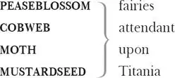

THESEUS , Duke of Athens
HIPPOLYTA , Queen of the Amazons, betrothed to Theseus
EGEUS , an Athenian courtier, father to Hermia
LYSANDER , in love with Hermia
HERMIA , in love with Lysander, but ordered by her father to marry Demetrius
DEMETRIUS , in love with Hermia, though once a suitor to Helena
HELENA , in love with Demetrius
Peter QUINCE , a carpenter and leader of an amateur dramatic group, who speaks the PROLOGUE to their play
Nick BOTTOM , a weaver, who plays PYRAMUS in the amateur play
Francis FLUTE , a bellows-mender, who plays THISBE in the amateur play
SNUG , a joiner, who plays a LION in the amateur play
Tom SNOUT , a tinker, who plays a WALL in the amateur play
Robin STARVELING , a tailor, who plays MOONSHINE in the amateur play
OBERON , King of Fairies
TITANIA , Queen of Fairies
ROBIN Goodfellow, also known as Puck, a sprite in the service of Oberon

PHILOSTRATE , an official in Theseus' court 1
Other Attendants at the court of Theseus; other
Fairies attendant upon Oberon
Enter Theseus 3 , Hippolyta, with others [Philostrate and attendants ]
THESEUS Now, fair Hippolyta 4 , our nuptial hour
Draws on apace 5 . Four happy days 6 bring in
Another moon: but O, methinks, how slow
This old moon wanes; she lingers 7 my desires,
Like to 8 a stepdame 9 or a dowager 10
Long withering out 11 a young man's revenue 12 .
HIPPOLYTA Four days will quickly steep 13 themselves in nights,
Four nights will quickly dream away the time.
And then the moon, like to a silver bow 14
New-bent 15 in heaven, shall behold the night
Of our solemnities 16 .
THESEUS Go, Philostrate,
Stir up the Athenian youth to merriments,
Awake the pert 17 and nimble spirit of mirth,
Turn melancholy forth to funerals:
The pale companion 18 is not for our pomp 19 .
[Exit Philostrate ]
Hippolyta, I wooed thee with my sword 20 ,
And won thy love doing thee injuries 21 .
But I will wed thee in another key,
With pomp, with triumph 22 and with revelling.
Enter Egeus and his daughter Hermia 23 , Lysander 24 and Demetrius 25
EGEUS Happy be Theseus, our renownèd duke.
THESEUS Thanks, good Egeus: what's the news with thee?
EGEUS Full of vexation come I, with complaint
Against my child, my daughter Hermia.
Stand forth, Demetrius. My noble lord,
This man hath my consent to marry her.
Stand forth, Lysander. And my gracious duke,
This man hath bewitched the bosom of my child.—
Thou, thou, Lysander, thou hast given her rhymes,
And interchanged love-tokens with my child.
Thou hast by moonlight at her window sung,
With feigning 26 voice verses of feigning love,
And stol'n the impression of her fantasy 27
With bracelets of thy hair, rings, gauds 28 , conceits 29 ,
Knacks 30 , trifles 31 , nosegays 32 , sweetmeats 33 — messengers
Of strong prevailment 34 in unhardened 35 youth —
With cunning hast thou filched 36 my daughter's heart,
Turned her obedience, which is due to me,
To stubborn harshness.— And, my gracious duke,
Be it so 37 she will not here before your grace
Consent to marry with Demetrius,
I beg the ancient privilege of Athens:
As she is mine, I may dispose of her;
Which shall be either to this gentleman
Or to her death, according to our law
Immediately 38 provided in that case.
THESEUS What say you, Hermia? Be advised, fair maid,
To you your father should be as a god,
One that composed your beauties, yea, and one
To whom you are but as a form in wax
By him imprinted and within his power
To leave the figure or disfigure 39 it.
Demetrius is a worthy gentleman.
HERMIA So is Lysander.
THESEUS In himself he is.
But in this kind 40 , wanting 41 your father's voice 42 ,
The other must be held the worthier.
HERMIA I would 43 my father looked but with my eyes.
THESEUS Rather your eyes must with his judgement look.
HERMIA I do entreat your grace to pardon me.
I know not by what power I am made bold,
Nor how it may concern 44 my modesty
In such a presence 45 here to plead my thoughts:
But I beseech your grace that I may know
The worst that may befall me in this case,
If I refuse to wed Demetrius.
THESEUS Either to die the death 46 or to abjure
Forever the society 47 of men.
Therefore, fair Hermia, question your desires,
Know of 48 your youth, examine well your blood 49 ,
Whether, if you yield not to your father's choice,
You can endure the livery 50 of a nun,
For aye 51 to be in shady cloister mewed 52 ,
To live a barren sister all your life,
Chanting faint hymns to the cold fruitless moon.
Thrice blessèd they that master so their blood,
To undergo such maiden pilgrimage.
But earthlier happy 53 is the rose distilled 54
Than that which withering on the virgin thorn
Grows, lives and dies in single blessedness 55 .
HERMIA So will I grow, so live, so die, my lord,
Ere 56 I will yield my virgin patent 57 up
Unto his lordship 58 , whose unwishèd yoke
My soul consents not to give sovereignty.
THESEUS Take time to pause, and by the next new moon —
The sealing day 59 betwixt my love and me,
For everlasting bond of fellowship —
Upon that day either prepare to die
For disobedience to your father's will,
Or else to wed Demetrius, as he would 60 ,
Or on Diana 61 's altar to protest 62
For aye 63 austerity and single life.
DEMETRIUS Relent, sweet Hermia.— And, Lysander, yield
Thy crazèd 64 title 65 to my certain right.
LYSANDER You have her father's love, Demetrius:
Let me have Hermia's. Do 66 you marry him.
EGEUS Scornful Lysander! True, he hath my love;
And what is mine my love shall render 67 him.
And she is mine, and all my right of her
I do estate unto 68 Demetrius.
LYSANDER I am, my lord, as well derived 69 as he,
As well possessed 70 : my love is more than his,
My fortunes every way as fairly 71 ranked,
If not with vantage, as Demetrius' 72 ,
And, which is more than all these boasts can be,
I am beloved of beauteous Hermia.
Why should not I then prosecute 73 my right?
Demetrius, I'll avouch 74 it to his head 75 ,
Made love to 76 Nedar's daughter, Helena 77 ,
And won her soul: and she, sweet lady, dotes 78 ,
Devoutly dotes, dotes in idolatry,
Upon this spotted 79 and inconstant man.
THESEUS I must confess that I have heard so much,
And with Demetrius thought to have spoke thereof,
But, being over-full of self-affairs 80 ,
My mind did lose 81 it. But, Demetrius, come,
And come, Egeus, you shall go with me.
I have some private schooling 82 for you both.
For you, fair Hermia, look 83 you arm 84 yourself
To fit your fancies 85 to your father's will,
Or else the law of Athens yields you up —
Which by no means we may extenuate 86 —
To death or to a vow of single life.—
Come, my Hippolyta. What cheer, my love?—
Demetrius and Egeus, go 87 along:
I must employ you in some business
Against 88 our nuptial and confer with you
Of something nearly that 89 concerns yourselves.
EGEUS With duty and desire we follow you.
Exeunt all but Lysander and Hermia
LYSANDER How now, my love! Why is your cheek so pale?
How chance the roses there do fade so fast?
HERMIA Belike 90 for want of rain, which I could well
Beteem 91 them from the tempest of mine eyes.
LYSANDER Ay me, for aught 92 that I could ever read,
Could ever hear by tale or history,
The course of true love never did run smooth.
But either it was different in blood 93 —
HERMIA O cross 94 ! Too high to be enthralled to low.
LYSANDER Or else misgraffèd 95 in respect of years—
HERMIA O spite! Too old to be engaged to young.
LYSANDER Or else it stood 96 upon the choice of merit 97 —
HERMIA O hell! To choose love by another's eyes.
LYSANDER Or if there were a sympathy 98 in choice,
War, death or sickness did lay siege to it,
Making it momentary 99 as a sound,
Swift as a shadow, short as any dream:
Brief as the lightning in the collied 100 night,
That in a spleen 101 unfolds 102 both heaven and earth,
And ere 103 a man hath power to say 'Behold!'
The jaws of darkness do devour it up:
So quick 104 bright things come to confusion 105 .
HERMIA If then true lovers have been ever crossed 106 ,
It stands as an edict in destiny.
Then let us teach our trial 107 patience,
Because it is a customary cross,
As due to love as thoughts and dreams and sighs,
Wishes and tears, poor fancy's 108 followers.
LYSANDER A good persuasion 109 . Therefore hear me, Hermia.
I have a widow aunt, a dowager
Of great revenue, and she hath no child.
From Athens is her house removed seven leagues 110 ,
And she respects 111 me as her only son.
There, gentle Hermia, may I marry thee,
And to that place the sharp Athenian law
Cannot pursue us. If thou lov'st me, then
Steal forth thy father's house tomorrow night,
And in the wood, a league without 112 the town,
Where I did meet thee once with Helena,
To do observance to a morn of May 113 ,
There will I stay 114 for thee.
HERMIA My good Lysander!
I swear to thee, by Cupid 115 's strongest bow,
By his best arrow with the golden head 116 ,
By the simplicity 117 of Venus' doves 118 ,
By that which knitteth 119 souls and prospers love,
And by that fire which burned the Carthage queen 120 ,
When the false Troyan 121 under sail was seen,
By all the vows that ever men have broke,
In number more than ever women spoke,
In that same place thou hast appointed me,
Tomorrow truly will I meet with thee.
LYSANDER Keep promise, love. Look, here comes Helena.
Enter Helena
HERMIA God speed fair 122 Helena, whither away?
HELENA Call you me fair? That fair again unsay.
Demetrius loves your fair: O happy 123 fair!
Your eyes are lodestars 124 , and your tongue's sweet air 125
More tuneable 126 than lark to shepherd's ear
When wheat is green 127 , when hawthorn buds appear.
Sickness is catching: O, were favour 128 so,
Your words I catch 129 , fair Hermia, ere I go,
My ear should catch your voice, my eye your eye,
My tongue should catch your tongue's sweet melody.
Were the world mine, Demetrius being bated 130 ,
The rest I'll give to be to you translated 131 .
O, teach me how you look, and with what art
You sway the motion of Demetrius' heart.
HERMIA I frown upon him, yet he loves me still.
HELENA O, that your frowns would teach my smiles such skill!
HERMIA I give him curses, yet he gives me love.
HELENA O, that my prayers could such affection move 132 !
HERMIA The more I hate, the more he follows me.
HELENA The more I love, the more he hateth me.
HERMIA His folly, Helena, is none 133 of mine.
HELENA None, but your beauty: would that fault were mine!
HERMIA Take comfort: he no more shall see my face.
Lysander and myself will fly 134 this place.
Before the time I did Lysander see,
Seemed Athens like a paradise to me.
O, then, what graces in my love do dwell,
That he hath turned a heaven into hell!
LYSANDER Helen, to you our minds we will unfold:
Tomorrow night, when Phoebe 135 doth behold
Her silver visage in the wat'ry glass 136 ,
Decking with liquid pearl the bladed grass,
A time that lovers' flights doth still 137 conceal,
Through Athens' gates have we devised to steal.
HERMIA And in the wood, where often you and I
Upon faint 138 primrose beds were wont 139 to lie,
Emptying our bosoms of their counsel 140 sweet,
There my Lysander and myself shall meet,
And thence from Athens turn away our eyes,
To seek new friends and strange 141 companions.
Farewell, sweet playfellow: pray thou for us,
And good luck grant thee thy Demetrius! —
Keep word, Lysander: we must starve our sight
From lovers' food till morrow deep midnight.
Exit
LYSANDER I will, my Hermia.— Helena, adieu.
As you on him, Demetrius dote on you!
Exit
HELENA How happy some o'er other some 142 can be!
Through Athens I am thought as fair as she.
But what of that? Demetrius thinks not so:
He will not know what all 143 but he doth know.
And as he errs, doting on Hermia's eyes,
So I, admiring of his qualities.
Things base and vile, holding no quantity 144 ,
Love can transpose to form 145 and dignity.
Love looks not with the eyes, but with the mind,
And therefore is winged Cupid painted blind 146 .
Nor hath love's mind of any judgement taste 147 ,
Wings and no eyes figure 148 unheedy haste.
And therefore is love said to be a child,
Because in choice he is often beguiled 149 .
As waggish 150 boys in game 151 themselves forswear 152 ,
So the boy love is perjured everywhere.
For ere Demetrius looked on Hermia's eyne 153 ,
He hailed down oaths that he was only mine.
And when this hail some heat from Hermia felt,
So he dissolved, and showers of oaths did melt.
I will go tell him of fair Hermia's flight:
Then to the wood will he tomorrow night
Pursue her; and for this intelligence 154 ,
If I have thanks, it is a dear expense 155 .
But herein mean I to enrich my pain,
To have his sight thither and back again.
Exit
Enter Quince 156 the carpenter, Snug 157 the joiner, Bottom 158 the weaver, Flute 159 the bellows-mender, Snout 160 the tinker and Starveling 161 the tailor
QUINCE Is all our company here?
BOTTOM You were best to call them generally 162 , man by man, according to the scrip 163 .
QUINCE Here is the scroll of every man's name, which is thought fit through all Athens to play in our interlude 164 before the duke and the duchess on his wedding day at night.
BOTTOM First, good Peter Quince, say what the play treats on 165 , then read the names of the actors, and so grow on to a point 166 .
QUINCE Marry 167 , our play is 'The most lamentable comedy and most cruel death of Pyramus and Thisbe.'
BOTTOM A very good piece of work, I assure you, and a merry. Now, good Peter Quince, call forth your actors by the scroll. Masters, spread yourselves 168 .
QUINCE Answer as I call you. Nick Bottom, the weaver.
BOTTOM Ready. Name what part I am for, and proceed.
QUINCE You, Nick Bottom, are set down for Pyramus.
BOTTOM What is Pyramus, a lover or a tyrant?
QUINCE A lover that kills himself most gallantly for love.
BOTTOM That will ask 169 some tears in the true performing of it. If I do it, let the audience look to their eyes: I will move storms; I will condole 170 in some measure. To the rest—yet my chief humour 171 is for a tyrant: I could play Ercles 172 rarely 173 , or a part to tear a cat in 174 , to make all split 175 .
The raging rocks
And shivering 176 shocks
Shall break the locks
Of prison gates.
And Phibbus' car 177
Shall shine from far
And make and mar 178
The foolish Fates 179 .
This was lofty 180 . Now name the rest of the players. This is Ercles' vein 181 , a tyrant's vein: a lover is more condoling.
QUINCE Francis Flute, the bellows-mender.
FLUTE Here, Peter Quince.
QUINCE You must take Thisbe on you.
FLUTE What is Thisbe? A wand'ring 182 knight?
QUINCE It is the lady that Pyramus must love.
FLUTE Nay, faith, let not me play a woman: I have a beard coming.
QUINCE That's all one 183 . You shall play it in a mask, and you may speak as small 184 as you will 185 .
BOTTOM An 186 I may hide my face, let me play Thisbe too. I'll speak in a monstrous little voice. 'Thisne, Thisne!' 'Ah, Pyramus, my lover dear! Thy Thisbe dear and lady dear!'
QUINCE No, no, you must play Pyramus.— And, Flute, you Thisbe.
BOTTOM Well, proceed.
QUINCE Robin Starveling, the tailor.
STARVELING Here, Peter Quince.
QUINCE Robin Starveling, you must play Thisbe's mother. Tom Snout, the tinker.
SNOUT Here, Peter Quince.
QUINCE You, Pyramus' father 187 ; myself, Thisbe's father; Snug the joiner, you, the lion's part: and I hope there is a play fitted 188 .
SNUG Have you the lion's part written? Pray you, if it be, give it me, for I am slow of study.
QUINCE You may do it extempore 189 , for it is nothing but roaring.
BOTTOM Let me play the lion too: I will roar that I will do any man's heart good to hear me. I will roar that I will make the duke say 'Let him roar again, let him roar again.'
QUINCE If you should do it too terribly, you would fright the duchess and the ladies that they would shriek, and that were enough to hang us all.
ALL That would hang us, every mother's son.
BOTTOM I grant you, friends, if that you should fright the ladies out of their wits, they would have no more discretion 190 but to hang us: but I will aggravate 191 my voice so that I will roar 192 you as gently as any sucking dove 193 . I will roar an 'twere 194 any nightingale.
QUINCE You can play no part but Pyramus, for Pyramus is a sweet-faced man, a proper 195 man, as one shall see in a summer's day; a most lovely gentlemanlike man: therefore you must needs play Pyramus.
BOTTOM Well, I will undertake it. What beard were I best to play it in?
QUINCE Why, what you will.
BOTTOM I will discharge 196 it in either your 197 straw-colour beard, your orange-tawny 198 beard, your purple-in-grain 199 beard, or your French-crown-coloured 200 beard, your perfect yellow.
QUINCE Some of your French crowns 201 have no hair at all, and then you will play bare-faced. But, masters, here are your parts: and I am to entreat you, request you and desire you, to con 202 them by tomorrow night, and meet me in the palace wood a mile without the town by moonlight. There will we rehearse, for if we meet in the city we shall be dogged with company, and our devices 203 known. In the meantime I will draw 204 a bill 205 of properties, such as our play wants. I pray you fail me not.
Passes out the parts
BOTTOM We will meet, and there we may rehearse more obscenely 206 and courageously 207 . Take pains, be perfect 208 . Adieu.
QUINCE At the duke's oak we meet.
BOTTOM Enough. Hold or cut bow-strings 209 .
Exeunt
Enter a Fairy at one door and Robin Goodfellow 211 [Puck 212 ] at another
ROBIN How now, spirit, whither wander you?
FAIRY Over hill, over dale,
Through bush, through brier,
Over park 213 , over pale 214 ,
Thorough 215 flood, thorough fire,
I do wander everywhere,
Swifter than the moon's sphere 216 ;
And I serve the fairy queen,
To dew her orbs 217 upon the green.
The cowslips tall her pensioners 218 be,
In their gold coats spots you see,
Those be rubies, fairy favours 219 ,
In those freckles live their savours 220 .
I must go seek some dewdrops here,
And hang a pearl in every cowslip's ear.
Farewell, thou lob 221 of spirits, I'll be gone:
Our queen and all her elves come here anon 222 .
ROBIN The king doth keep his revels here tonight:
Take heed the queen come not within his sight,
For Oberon is passing fell 223 and wrath 224 ,
Because that she as her attendant hath
A lovely boy, stol'n from an Indian king.
She never had so sweet a changeling 225 ,
And jealous Oberon would have the child
Knight of his train, to trace 226 the forests wild.
But she perforce 227 withholds the lovèd boy,
Crowns him with flowers and makes him all her joy.
And now they never meet in grove or green,
By fountain 228 clear or spangled starlight sheen 229 ,
But they do square 230 , that all their elves for fear
Creep into acorn cups and hide them there.
FAIRY Either I mistake your shape and making 231 quite 232 ,
Or else you are that shrewd 233 and knavish sprite
Called Robin Goodfellow. Are not you he
That frights the maidens of the villagery 234 ,
Skim 235 milk, and sometimes labour in the quern 236 ,
And bootless 237 make the breathless housewife churn,
And sometime make the drink to bear no barm 238 ,
Mislead 239 night-wanderers, laughing at their harm?
Those that Hobgoblin call you and sweet Puck,
You do their work and they shall have good luck.
Are not you he?
ROBIN Thou speak'st aright;
I am that merry wanderer of the night.
I jest to Oberon and make him smile
When I a fat and bean-fed 240 horse beguile,
Neighing in likeness of a filly 241 foal,
And sometime lurk I in a gossip's 242 bowl 243 ,
In very likeness of a roasted crab 244 ,
And when she drinks, against her lips I bob
And on her withered dewlap 245 pour the ale.
The wisest aunt 246 , telling the saddest tale,
Sometime for three-foot stool mistaketh me,
Then slip I from her bum, down topples she,
And 'tailor' 247 cries, and falls into a cough.
And then the whole quire 248 hold their hips and laugh,
And waxen 249 in their mirth and neeze 250 and swear
A merrier hour was never wasted 251 there.
But, room 252 , fairy! Here comes Oberon 253 .
FAIRY And here my mistress. Would that he were gone!
Enter the King of Fairies [Oberon ] at one door with his train, and the Queen [Titania 254 ] at another with hers
OBERON Ill met by moonlight, proud Titania.
TITANIA What, jealous Oberon? Fairies, skip hence.
I have forsworn his bed and company.
OBERON Tarry 255 , rash wanton 256 , am not I thy lord 257 ?
TITANIA Then I must be thy lady 258 : but I know
When thou hast stol'n away from fairy land,
And in the shape of Corin 259 sat all day,
Playing on pipes of corn 260 and versing 261 love
To amorous Phillida 262 . Why art thou here,
Come from the farthest step 263 of India?
But that, forsooth 264 , the bouncing 265 Amazon,
Your buskined 266 mistress and your warrior love,
To Theseus must be wedded; and you come
To give their bed joy and prosperity?
OBERON How canst thou thus for shame, Titania,
Glance at 267 my credit 268 with Hippolyta,
Knowing I know thy love to Theseus?
Didst not thou lead him through the glimmering 269 night
From Perigenia 270 whom he ravishèd 271 ?
And make him with fair Aegles 272 break his faith,
With Ariadne 273 and Antiopa 274 ?
TITANIA These are the forgeries of jealousy,
And never since the middle summer's spring 275
Met we on hill, in dale, forest or mead 276 ,
By pavèd 277 fountain or by rushy 278 brook,
Or in 279 the beachèd 280 margent 281 of the sea,
To dance our ringlets 282 to the whistling wind,
But with thy brawls 283 thou hast disturbed our sport 284 .
Therefore the winds, piping 285 to us in vain,
As in revenge, have sucked up from the sea
Contagious 286 fogs, which falling in the land
Hath every petty 287 river made so proud 288
That they have overborne their continents 289 .
The ox hath therefore stretched 290 his yoke in vain,
The ploughman lost 291 his sweat, and the green corn
Hath rotted ere his youth attained a beard 292 .
The fold 293 stands empty in the drownèd field,
And crows are fatted with the murrion 294 flock,
The nine men's morris 295 is filled up with mud,
And the quaint 296 mazes 297 in the wanton green 298
For lack of tread are undistinguishable.
The human mortals want their winter here:
No night is now with hymn or carol blessed 299 .
Therefore 300 the moon, the governess of floods 301 ,
Pale in her anger, washes 302 all the air,
That rheumatic diseases 303 do abound.
And through this distemperature 304 we see
The seasons alter; hoary-headed 305 frosts
Fall in the fresh lap of the crimson rose,
And on old Hiems 306 ' thin and icy crown
An odorous chaplet 307 of sweet summer buds
Is, as in mockery, set. The spring, the summer,
The childing 308 autumn, angry winter, change
Their wonted 309 liveries, and the mazèd 310 world
By their increase 311 now knows not which is which;
And this same progeny of evils comes
From our debate 312 , from our dissension 313 :
We are their parents and original 314 .
OBERON Do you amend it then, it lies in you.
Why should Titania cross her Oberon?
I do but beg a little changeling boy
To be my henchman 315 .
TITANIA Set your heart at rest:
The fairy land buys not the child of me.
His mother was a votress 316 of my order,
And in the spicèd Indian air by night
Full 317 often hath she gossiped by my side,
And sat with me on Neptune 318 's yellow sands,
Marking 319 th'embarkèd traders 320 on the flood 321 ,
When we have laughed to see the sails conceive
And grow big-bellied with the wanton 322 wind,
Which she, with pretty and with swimming gait 323
Following — her womb then rich with my young squire —
Would imitate, and sail upon the land,
To fetch me trifles, and return again
As from a voyage, rich with merchandise.
But she, being mortal, of that boy 324 did die:
And for her sake do I rear up her boy,
And for her sake I will not part with him.
OBERON How long within this wood intend you stay?
TITANIA Perchance 325 till after Theseus' wedding day.
If you will patiently 326 dance in our round 327
And see our moonlight revels, go with us;
If not, shun me, and I will spare 328 your haunts.
OBERON Give me that boy, and I will go with thee.
TITANIA Not for thy fairy kingdom. Fairies, away.
We shall chide 329 downright 330 , if I longer stay.
Exeunt [Titania and her train ]
OBERON Well, go thy way: thou shalt not from 331 this grove
Till I torment thee for this injury.
My gentle Puck, come hither. Thou rememb'rest
Since 332 once I sat upon a promontory 333 ,
And heard a mermaid on a dolphin's back
Uttering such dulcet 334 and harmonious breath 335
That the rude 336 sea grew civil at her song,
And certain 337 stars shot madly from their spheres
To hear the sea-maid's music.
ROBIN I remember.
OBERON That very time I saw, but thou couldst not,
Flying between the cold moon and the earth,
Cupid all 338 armed; a certain 339 aim he took
At a fair vestal 340 thronèd by the west,
And loosed his love-shaft smartly from his bow,
As 341 it should pierce a hundred thousand hearts.
But I might 342 see young Cupid's fiery shaft
Quenched in the chaste beams of the wat'ry moon;
And the imperial votress passèd on,
In maiden meditation, fancy-free 343 .
Yet marked I where the bolt 344 of Cupid fell.
It fell upon a little western flower,
Before milk-white, now purple 345 with love's wound,
And maidens call it love-in-idleness 346 .
Fetch me that flower; the herb I showed thee once:
The juice of it on sleeping eyelids laid
Will make or 347 man or woman madly dote
Upon the next live creature that it sees.
Fetch me this herb, and be thou here again
Ere the leviathan 348 can swim a league.
ROBIN I'll put a girdle 349 round about the earth
In forty minutes.
[Exit ]
OBERON Having once this juice,
I'll watch Titania when she is asleep,
And drop the liquor of it in her eyes.
The next thing when she waking looks upon,
Be it on lion, bear, or wolf or bull,
On meddling monkey or on busy ape,
She shall pursue it with the soul of love.
And ere I take this charm off from her sight,
As I can take it with another herb,
I'll make her render up her page to me.
But who comes here? I am invisible,
And I will overhear their conference.
He stands aside
Enter Demetrius, Helena following him
DEMETRIUS I love thee not, therefore pursue me not.
Where is Lysander and fair Hermia?
The one I'll stay, the other stayeth 350 me.
Thou told'st me they were stolen into this wood 351 ;
And here am I, and wood within this wood,
Because I cannot meet my Hermia.
Hence, get thee gone, and follow me no more.
HELENA You draw 352 me, you hard-hearted adamant 353 ;
But yet you draw not iron, for my heart
Is true as steel. Leave you 354 your power to draw,
And I shall have no power to follow you.
DEMETRIUS Do I entice you? Do I speak you fair 355 ?
Or rather do I not in plainest truth
Tell you I do not nor I cannot love you?
HELENA And even for that do I love thee the more.
I am your spaniel, and, Demetrius,
The more you beat me, I will fawn on you.
Use me but 356 as your spaniel: spurn me, strike me,
Neglect me, lose me; only give me leave 357 ,
Unworthy as I am, to follow you.
What worser place can I beg in your love —
And yet a place of high respect with me —
Than to be used as you do use your dog?
DEMETRIUS Tempt not too much the hatred of my spirit,
For I am sick when I do look on thee.
HELENA And I am sick when I look not on you.
DEMETRIUS You do impeach 358 your modesty too much,
To leave the city and commit yourself
Into the hands of one that loves you not,
To trust the opportunity of night
And the ill counsel of a desert 359 place
With the rich worth of your virginity.
HELENA Your virtue is my privilege 360 : for that 361
It is not night when I do see your face,
Therefore I think I am not in the night.
Nor doth this wood lack worlds of company,
For you in my respect are all the world.
Then how can it be said I am alone,
When all the world is here to look on me?
DEMETRIUS I'll run from thee and hide me in the brakes 362 ,
And leave thee to the mercy of wild beasts.
HELENA The wildest hath not such a heart as you.
Run when you will, the story shall be changed:
Apollo flies, and Daphne holds the chase 363 ;
The dove pursues the griffin 364 , the mild hind 365
Makes speed to catch the tiger. Bootless 366 speed,
When cowardice pursues and valour flies.
DEMETRIUS I will not stay 367 thy questions, let me go;
Or if thou follow me, do not believe
But I shall do thee mischief in the wood.
[↓Exit Demetrius ↓]
HELENA Ay, in the temple, in the town, the field,
You do me mischief. Fie, Demetrius!
Your wrongs do set a scandal on my sex 368 :
We cannot fight for love, as men may do;
We should be wooed and were not made to woo.
I'll follow thee and make a heaven of hell,
To die upon 369 the hand I love so well.
Exit
OBERON Fare thee well, nymph: ere he do leave this grove,
Thou shalt fly him and he shall seek thy love.
Enter [Robin ] Puck
Hast thou the flower there? Welcome, wanderer.
ROBIN Ay, there it is.
Shows the flower
OBERON I pray thee give it me.
I know a bank where the wild thyme blows 370 ,
Where oxlips 371 and the nodding violet grows,
Quite 372 over-canopied with luscious woodbine 373 ,
With sweet musk-roses 374 and with eglantine 375 :
There sleeps Titania sometime 376 of the night,
Lulled in these flowers with dances and delight:
And there the snake throws 377 her enamelled skin,
Weed 378 wide enough to wrap a fairy in.
And with the juice of this I'll streak her eyes,
And make her full of hateful fantasies.
Take thou some of it, and seek through this grove;
Gives him some juice
A sweet Athenian lady is in love
With a disdainful youth: anoint his eyes,
But do it when the next thing he espies
May be the lady. Thou shalt know the man
By the Athenian garments he hath on.
Effect it with some care, that he may prove
More fond on 379 her than she upon her love;
And look thou meet me ere the first cock crow.
ROBIN Fear not, my lord, your servant shall do so.
Exeunt
Enter Queen of Fairies [Titania ] with her train
TITANIA Come, now a roundel 380 and a fairy song;
Then, for the third part of a minute, hence:
Some to kill cankers 381 in the musk-rose buds,
Some war with reremice 382 for their leathern 383 wings,
To make my small elves coats, and some keep back
The clamorous owl that nightly hoots and wonders
At our quaint 384 spirits. Sing me now asleep,
Then to your offices 385 and let me rest.
She lies down on a bank
Fairies sing
FIRST FAIRY You spotted snakes with double 386 tongue,
Thorny hedgehogs, be not seen.
Newts and blind-worms 387 , do no wrong,
Come not near our fairy queen.
CHORUS Philomel 388 , with melody
Sing in our sweet lullaby,
Lulla, lulla, lullaby, lulla, lulla, lullaby.
Never harm,
Nor spell nor charm,
Come our lovely lady nigh 389 ;
So, good night, with lullaby.
SECOND FAIRY Weaving spiders, come not here.
Hence, you long-legged spinners, hence!
Beetles black, approach not near;
Worm nor snail, do no offence.
CHORUS Philomel, with melody, etc. 390
FIRST FAIRY Hence, away! Now all is well;
One aloof 391 stand sentinel 392 .
She [Titania ] sleeps. [Exeunt Fairies ]
Enter Oberon
OBERON What thou see'st when thou dost wake,
Squeezes juice on Titania's eyes
Do it for thy true-love take,
Love and languish for his sake.
Be it ounce 393 or cat or bear,
Pard 394 , or boar with bristled hair,
In thy eye that shall appear
When thou wak'st, it is thy dear.
Wake when some vile thing is near.
[Exit ]
Enter Lysander and Hermia
LYSANDER Fair love, you faint with wand'ring in the wood,
And to speak troth 395 , I have forgot our way:
We'll rest us, Hermia, if you think it good,
And tarry for the comfort of the day 396 .
HERMIA Be it so, Lysander; find you out a bed,
For I upon this bank will rest my head.
LYSANDER One turf shall serve as pillow for us both:
One heart, one bed, two bosoms and one troth 397 .
HERMIA Nay, good Lysander, for my sake, my dear,
Lie further off yet, do not lie so near.
LYSANDER O, take the sense 398 , sweet, of my innocence!
Love takes the meaning in love's conference 399 .
I mean that my heart unto yours is knit
So that but one heart we can make of it.
Two bosoms interchainèd with an oath,
So then two bosoms and a single troth.
Then by your side no bed-room me deny,
For lying so, Hermia, I do not lie 400 .
HERMIA Lysander riddles very prettily 401 .
Now much beshrew 402 my manners and my pride,
If Hermia meant to say Lysander lied.
But, gentle friend 403 , for love and courtesy
Lie further off, in human 404 modesty:
Such separation as may well be said
Becomes 405 a virtuous bachelor and a maid,
So far be distant, and good night, sweet friend;
Thy love ne'er alter till thy sweet life end!
LYSANDER Amen, amen, to that fair prayer, say I,
And then end life when I end loyalty!
Here is my bed: sleep give thee all his rest!
HERMIA With half that wish the wisher's eyes 406 be pressed 407 !
They sleep
Enter [Robin ] Puck
ROBIN Through the forest have I gone,
But Athenian found I none
On whose eyes I might approve 408
This flower's force in stirring love.
Night and silence — who is here?
Sees Lysander
Weeds of Athens he doth wear:
This is he, my master said,
Despisèd the Athenian maid:
And here the maiden, sleeping sound,
On the dank and dirty ground.
Pretty soul, she durst not lie
Near this lack-love, this kill-courtesy.
Churl 409 , upon thy eyes I throw
Puts juice on Lysander's eyes
All the power this charm doth owe 410 .
When thou wak'st, let love forbid
Sleep his seat on thy eyelid 411 .
So awake when I am gone,
For I must now to Oberon.
Exit
Enter Demetrius and Helena, running
HELENA Stay, though thou kill me, sweet Demetrius.
DEMETRIUS I charge 412 thee, hence, and do not haunt 413 me thus.
HELENA O, wilt thou darkling 414 leave me? Do not so.
DEMETRIUS Stay, on thy peril: I alone will go.
Exit
HELENA O, I am out of breath in this fond 415 chase!
The more my prayer, the lesser is my grace 416 .
Happy is Hermia, wheresoe'er she lies 417 ;
For she hath blessèd and attractive eyes.
How came her eyes so bright? Not with salt tears:
If so, my eyes are oftener washed than hers.
No, no, I am as ugly as a bear;
For beasts that meet me run away for fear:
Therefore no marvel 418 though Demetrius
Do, as 419 a monster, fly my presence thus.
What wicked and dissembling glass 420 of mine
Made me compare with Hermia's sphery eyne 421 ?
But who is here? Lysander, on the ground;
Sees Lysander
Dead, or asleep? I see no blood, no wound.
Lysander if you live, good sir, awake.
LYSANDER And run through fire I will for thy sweet sake.
Wakes
Transparent 422 Helena, nature shows her art 423
That through thy bosom makes me see thy heart.
Where is Demetrius? O, how fit a word
Is that vile name to perish on my sword!
HELENA Do not say so, Lysander, say not so.
What though 424 he love your Hermia? Lord, what though?
Yet Hermia still loves you; then be content.
LYSANDER Content with Hermia? No, I do repent
The tedious minutes I with her have spent.
Not Hermia but Helena now I love;
Who will 425 not change a raven for a dove?
The will of man is by his reason swayed,
And reason says you are the worthier maid.
Things growing are not ripe until their season;
So I, being young, till now ripe not 426 to reason.
And touching now the point 427 of human skill 428 ,
Reason becomes the marshal 429 to my will
And leads me to your eyes, where I o'erlook 430
Love's stories 431 written in love's richest book.
HELENA Wherefore 432 was I to this keen mockery born?
When at your hands did I deserve this scorn?
Is't not enough, is't not enough, young man,
That I did never, no, nor never can,
Deserve a sweet look from Demetrius' eye,
But you must flout my insufficiency?
Good troth 433 you do me wrong, good sooth 434 , you do,
In such disdainful manner me to woo.
But fare you well; perforce I must confess
I thought you lord 435 of more true gentleness 436 .
O, that a lady of 437 one man refused
Should of another therefore be abused 438 !
Exit
LYSANDER She sees not Hermia. Hermia, sleep thou there,
And never mayst thou come Lysander near;
For as a surfeit 439 of the sweetest things
The deepest loathing to the stomach brings,
Or as the heresies that men do leave 440
Are hated most of those they did deceive 441 ,
So thou, my surfeit and my heresy,
Of 442 all be hated, but the most of me.
And all my powers address 443 your love and might
To honour Helen and to be her knight!
Exit
HERMIA Help me, Lysander, help me; do thy best
Wakes
To pluck this crawling serpent from my breast!
Ay me, for pity; what a dream was here?
Lysander, look how I do quake with fear:
Methought a serpent ate my heart away,
And you sat smiling at his cruel prey 444 .
Lysander! What, removed 445 ? Lysander! Lord!
What, out of hearing? Gone? No sound, no word?
Alack, where are you? Speak, an if 446 you hear:
Speak, of all loves 447 ! I swoon almost with fear.
No? Then I well perceive you are not nigh.
Either death or you I'll find immediately.
Titania remains asleep
Exit
Enter the Clowns 448 [Bottom, Quince, Snug, Flute, Snout and Starveling ]
BOTTOM Are we all met?
QUINCE Pat 449 , pat, and here's a marvellous convenient place for our rehearsal. This green plot shall be our stage, this hawthorn brake 450 our tiring-house 451 , and we will do it in action as we will do it before the duke.
BOTTOM Peter Quince?
QUINCE What sayest thou, bully 452 Bottom?
BOTTOM There are things in this comedy of Pyramus and Thisbe that will never please. First, Pyramus must draw a sword to kill himself; which the ladies cannot abide. How answer you that?
SNOUT By'r lakin 453 , a parlous 454 fear.
STARVELING I believe we must leave the killing out, when all is done 455 .
BOTTOM Not a whit: I have a device to make all well. Write me 456 a prologue, and let the prologue seem to say we will do no harm with our swords, and that Pyramus is not killed indeed. And for the more better assurance, tell them that I, Pyramus, am not Pyramus, but Bottom the weaver; this will put them out of fear.
QUINCE Well, we will have such a prologue, and it shall be written in eight and six 457 .
BOTTOM No, make it two more: let it be written in eight and eight.
SNOUT Will not the ladies be afeard 458 of the lion?
STARVELING I fear it 459 , I promise you.
BOTTOM Masters, you ought to consider with yourselves, to bring in — God shield us! — a lion among ladies is a most dreadful thing. For there is not a more fearful 460 wild-fowl 461 than your lion living. And we ought to look to it.
SNOUT Therefore another prologue must tell he is not a lion.
BOTTOM Nay, you must name his name, and half his face must be seen through the lion's neck, and he himself must speak through, saying thus, or to the same defect 462 : 'Ladies' or 'Fair-ladies, I would wish you' or 'I would request you' or 'I would entreat you, not to fear, not to tremble. My life for yours 463 . If you think I come hither as a lion, it were pity of my life 464 . No, I am no such thing, I am a man as other men are.' And there indeed let him name his name, and tell them plainly 465 he is Snug the joiner.
QUINCE Well, it shall be so. But there is two hard things: that is, to bring the moonlight into a chamber, for you know Pyramus and Thisbe meet by moonlight.
SNOUT Doth the moon shine that night we play our play?
BOTTOM A calendar, a calendar! Look in the almanac 466 . Find out moonshine, find out moonshine.
They consult an almanac
[Robin may ] enter
QUINCE Yes, it doth shine that night.
BOTTOM Why, then may you leave a casement 467 of the great chamber window, where we play, open, and the moon may shine in at the casement.
QUINCE Ay, or else one must come in with a bush of thorns and a lantern 468 , and say he comes to disfigure 469 , or to present 470 , the person of Moonshine. Then there is another thing: we must have a wall in the great chamber; for Pyramus and Thisbe, says the story, did talk through the chink of a wall.
SNOUT You can never bring in a wall. What say you, Bottom?
BOTTOM Some man or other must present Wall: and let him have some plaster, or some loam, or some rough-cast 471 about him, to signify wall; or let him hold his fingers thus; and through that cranny shall Pyramus and Thisbe whisper.
Hand gesture suggesting a hole in a wall
QUINCE If that may be, then all is well. Come, sit down, every mother's son, and rehearse 472 your parts. Pyramus, you begin: when you have spoken your speech, enter into that brake, and so every one according to his cue.
Robin [may ] enter
ROBIN What hempen home-spuns 473 have we swagg'ring 474 here,
Aside
So near the cradle 475 of the fairy queen?
What, a play toward 476 ? I'll be an auditor,
An actor too perhaps, if I see cause.
QUINCE Speak, Pyramus.— Thisbe, stand forth.
PYRAMUS [BOTTOM] Thisbe, the flowers of odious savours sweet—
QUINCE Odours, odours.
PYRAMUS [BOTTOM] —odours savours sweet,
So hath thy breath, my dearest Thisbe dear.
But hark, a voice! Stay thou but here awhile,
And by and by 477 I will to thee appear.
Exit
ROBIN A stranger Pyramus than e'er played here.
[Exit ]
THISBE [FLUTE] Must I speak now?
QUINCE Ay, marry, must you, for you must understand he goes but to see a noise that he heard, and is to come again.
THISBE [FLUTE] Most radiant Pyramus, most lily-white of hue,
Of colour like the red rose on triumphant brier,
Most brisky juvenal 478 and eke 479 most lovely Jew 480 ,
As true as truest horse that yet would never tire,
I'll meet thee, Pyramus, at Ninny's tomb.
QUINCE 'Ninus 481 ' tomb', man! Why, you must not speak that yet; that you answer to Pyramus. You speak all your part 482 at once, cues and all. Pyramus, enter: your cue is past; it is, 'never tire'.
THISBE [FLUTE] O — As true as truest horse that yet would never tire.
Enter [Robin and ] Pyramus [Bottom ] with the ass head
PYRAMUS [BOTTOM] If I were fair 483 , Thisbe, I were 484 only thine.
QUINCE O monstrous! O strange! We are haunted. Pray, masters! Fly, masters! Help!
The Clowns all exit
ROBIN I'll follow you, I'll lead you about a round 485 ,
Through bog, through bush, through brake, through brier.
Sometime a horse I'll be, sometime a hound,
A hog, a headless bear, sometime a fire 486 ,
And neigh and bark and grunt and roar and burn,
Like horse, hound, hog, bear, fire, at every turn.
Exit
If Bottom exited with the other clowns, he re-enters here
BOTTOM Why do they run away? This is a knavery 487 of them to make me afeard.
Enter Snout
SNOUT O Bottom, thou art changed! What do I see on thee?
BOTTOM What do you see? You see an asshead of your own, do you?
[Exit Snout ]
Enter Quince
QUINCE Bless thee, Bottom! Bless thee! Thou art translated 488 .
Exit
BOTTOM I see their knavery: this is to make an ass of me, to fright me, if they could; but I will not stir from this place, do what they can. I will walk up and down here, and I will sing, that they shall hear I am not afraid.
The ousel cock 489 so black of hue,
Sings
With orange-tawny bill,
The throstle 490 with his note so true,
The wren with little quill 491 —
TITANIA What angel wakes me from my flow'ry bed?
Wakes
BOTTOM The finch, the sparrow and the lark,
Sings
The plain-song 492 cuckoo grey,
Whose note full many a man doth mark,
And dares not answer nay 493 —
For, indeed, who would set his wit to so foolish a bird 494 ? Who would give a bird the lie 495 , though he cry 'cuckoo 496 ' never so 497 ?
TITANIA I pray thee, gentle mortal, sing again:
Mine ear is much enamoured of thy note;
So is mine eye enthrallèd 498 to thy shape:
And thy fair virtue's 499 force perforce 500 doth move me
On the first view to say, to swear, I love thee.
BOTTOM Methinks, mistress, you should have little reason for that: and yet, to say the truth, reason and love keep little company together nowadays; the more the pity that some honest neighbours will not make them friends. Nay, I can gleek 501 upon occasion.
TITANIA Thou art as wise as thou art beautiful.
BOTTOM Not so, neither: but if I had wit enough to get out of this wood, I have enough to serve mine own turn 502 .
TITANIA Out of this wood do not desire to go:
Thou shalt remain here, whether thou wilt 503 or no.
I am a spirit of no common rate 504 .
The summer still 505 doth tend upon 506 my state 507 ,
And I do love thee: therefore, go with me.
I'll give thee fairies to attend on thee,
And they shall fetch thee jewels from the deep 508 ,
And sing while thou on pressèd flowers dost sleep.
And I will purge thy mortal grossness 509 so
That thou shalt like an airy spirit go.
Peaseblossom 510 , Cobweb, Moth 511 , Mustardseed!
Enter four Fairies
PEASEBLOSSOM Ready.
COBWEB And I.
MOTH And I.
MUSTARDSEED And I.
ALL Where shall we go?
TITANIA Be kind and courteous to this gentleman.
Hop in his walks and gambol in his eyes 512 ,
Feed him with apricocks 513 and dewberries 514 ,
With purple grapes, green figs, and mulberries.
The honey-bags steal from the humble-bees 515 ,
And for night-tapers 516 crop their waxen thighs
And light them at the fiery glow-worm's eyes,
To have my love to bed and to arise 517 .
And pluck the wings from painted butterflies
To fan the moonbeams from his sleeping eyes.
Nod to him, elves, and do him courtesies.
PEASEBLOSSOM Hail, mortal!
COBWEB Hail!
MOTH Hail!
MUSTARDSEED Hail!
BOTTOM I cry your worship's mercy 518 , heartily; I beseech your worship's name.
To Cobweb
COBWEB Cobweb.
BOTTOM I shall desire you of more acquaintance 519 , good Master Cobweb: if I cut my finger, I shall make bold with you 520 .— Your name, honest gentleman?
PEASEBLOSSOM Peaseblossom.
BOTTOM I pray you commend me to Mistress Squash 521 , your mother, and to Master Peascod 522 , your father. Good Master Peaseblossom, I shall desire you of more acquaintance too.— Your name, I beseech you, sir?
MUSTARDSEED Mustardseed.
BOTTOM Good Master Mustardseed, I know your patience 523 well: that same cowardly, giant-like ox-beef hath devoured many a gentleman of your house. I promise you, your kindred hath made my eyes water 524 ere now. I desire you of more acquaintance, good Master Mustardseed.
TITANIA Come, wait upon him, lead him to my bower.
The moon methinks looks with a wat'ry eye,
And when she weeps 525 , weeps every little flower,
Lamenting some enforcèd 526 chastity.
Tie up my lover's tongue 527 , bring him silently.
Exeunt
Enter King of Fairies [Oberon ] alone
OBERON I wonder if Titania be awaked;
Then what it was that next came in her eye,
Which she must dote on in extremity 528 .
Enter [Robin ] Puck
Here comes my messenger.— How now, mad spirit?
What night-rule 529 now about this haunted 530 grove?
ROBIN My mistress with a monster is in love.
Near to her close 531 and consecrated bower,
While she was in her dull 532 and sleeping hour,
A crew of patches 533 , rude mechanicals 534 ,
That work for bread upon Athenian stalls,
Were met together to rehearse a play
Intended for great Theseus' nuptial-day.
The shallowest thick-skin of that barren sort 535 ,
Who Pyramus presented in their sport,
Forsook 536 his scene 537 and entered in a brake,
When I did him at this advantage take:
An ass's noll 538 I fixèd on his head.
Anon his Thisbe must be answerèd,
And forth my mimic 539 comes. When they him spy,
As wild geese that the creeping fowler 540 eye,
Or russet-pated choughs 541 , many in sort 542 ,
Rising and cawing at the gun's report 543 ,
Sever 544 themselves and madly sweep 545 the sky,
So, at his sight, away his fellows fly.
And at our stamp here o'er and o'er one falls;
He 'murder' cries and help from Athens calls.
Their sense thus weak, lost with their fears thus strong,
Made senseless things begin to do them wrong.
For briars and thorns at their apparel snatch,
Some sleeves, some hats, from yielders 546 all things catch.
I led them on in this distracted fear,
And left sweet Pyramus translated there:
When in that moment, so it came to pass,
Titania waked and straightway loved an ass.
OBERON This falls out better than I could devise.
But hast thou yet latched 547 the Athenian's eyes
With the love juice, as I did bid thee do?
ROBIN I took him sleeping — that is finished too —
And the Athenian woman by his side,
That, when he waked, of force 548 she must be eyed.
Enter Demetrius and Hermia
OBERON Stand close 549 . This is the same Athenian.
They stand aside
ROBIN This is the woman, but not this the man.
DEMETRIUS O, why rebuke you him that loves you so?
Lay breath so bitter on your bitter foe.
HERMIA Now I but chide 550 , but I should use 551 thee worse,
For thou, I fear, hast given me cause to curse,
If thou hast slain Lysander in his sleep,
Being o'er shoes 552 in blood, plunge in the deep,
And kill me too.
The sun was not so true 553 unto the day
As he to me. Would he have stol'n away
From sleeping Hermia? I'll believe as soon
This whole 554 earth may be bored 555 and that the moon
May through the centre 556 creep, and so displease
Her brother's 557 noontide with th'Antipodes 558 .
It cannot be but thou hast murdered him,
So should a murderer look, so dead 559 , so grim.
DEMETRIUS So should the murdered look, and so should I,
Pierced through the heart with your stern cruelty:
Yet you, the murderer, looks as bright, as clear,
As yonder Venus 560 in her glimm'ring sphere 561 .
HERMIA What's this to 562 my Lysander? Where is he?
Ah, good Demetrius, wilt thou give him me?
DEMETRIUS I'd rather give his carcass to my hounds.
HERMIA Out, dog! Out, cur 563 ! Thou driv'st me past the bounds
Of maiden's patience. Hast thou slain him, then?
Henceforth be never numbered 564 among men.
O, once 565 tell true, tell true even for my sake!
Durst 566 thou a 567 looked upon him being awake?
And hast thou killed him sleeping? O brave touch 568 !
Could not a worm 569 , an adder, do so much?
An adder did it, for with doubler 570 tongue
Than thine, thou serpent, never adder stung.
DEMETRIUS You spend 571 your passion 572 on a misprised mood 573 .
I am not guilty of Lysander's blood,
Nor is he dead, for aught that I can tell.
HERMIA I pray thee tell me then that he is well.
DEMETRIUS An if I could, what should I get therefor 574 ?
HERMIA A privilege never to see me more;
And from thy hated presence part I so:
See me no more, whether he be dead or no.
Exit
DEMETRIUS There is no following her in this fierce vein 575 :
Here therefore for a while I will remain.
So sorrow's heaviness doth heavier 576 grow
For 577 debt that bankrupt sleep doth sorrow owe 578 ,
Which now in some slight measure it will pay,
If for his tender 579 here I make some stay 580 .
[Demetrius ] lies down [and sleeps ]
OBERON What hast thou done? Thou hast mistaken quite 581
And laid the love juice on some true love's sight:
Of thy misprision 582 must perforce ensue
Some true love turned, and not a false turned true.
ROBIN Then fate o'errules, that, one man holding troth 583 ,
A million fail, confounding 584 oath on 585 oath.
OBERON About the wood go swifter than the wind,
And Helena of Athens look 586 thou find.
All fancy-sick 587 she is and pale of cheer 588 ,
With sighs of love, that costs the fresh blood dear 589 .
By some illusion 590 see thou bring her here.
I'll charm his eyes against 591 she doth appear.
ROBIN I go, I go, look how I go,
Swifter than arrow from the Tartar's bow 592 .
Exit
OBERON Flower of this purple dye,
Squeezes juice on Demetrius' eyes
Hit with Cupid's archery,
Sink in apple 593 of his eye.
When his love he doth espy,
Let her shine as glor'ously
As the Venus of the sky.
When thou wak'st, if she be by,
Beg of her for remedy 594 .
Enter [Robin ] Puck
ROBIN Captain of our fairy band,
Helena is here at hand,
And the youth, mistook by me,
Pleading for a lover's fee 595 .
Shall we their fond pageant 596 see?
Lord, what fools these mortals be!
OBERON Stand aside: the noise they make
Will cause Demetrius to awake.
They stand aside
ROBIN Then will two at once woo one,
That must needs be sport alone 597 .
And those things do best please me
That befall preposterously 598 .
Enter Lysander [following ] Helena
LYSANDER Why should you think that I should woo in scorn?
Scorn and derision never come in tears:
Look when 599 I vow, I weep; and vows so born,
In their nativity 600 all truth appears.
How can these things in me seem scorn to you,
Bearing the badge 601 of faith to prove them true?
HELENA You do advance 602 your cunning more and more.
When truth kills truth 603 , O devilish-holy fray 604 !
These vows are Hermia's. Will you give her o'er 605 ?
Weigh oath with oath, and you will nothing weigh.
Your vows to her and me, put in two scales,
Will even weigh, and both as light as tales 606 .
LYSANDER I had no judgement when to her I swore.
HELENA Nor none, in my mind, now you give her o'er.
LYSANDER Demetrius loves her, and he you 607 .
DEMETRIUS O Helen, goddess, nymph, perfect, divine!
Awakes
To what, my love, shall I compare thine eyne?
Crystal is muddy. O, how ripe 608 in show 609
Thy lips, those kissing cherries, tempting grow!
That pure congealèd white 610 , high Taurus 611 ' snow,
Fanned with the eastern wind, turns to a crow 612
When thou hold'st up thy hand. O, let me kiss
This princess of pure white, this seal 613 of bliss!
HELENA O spite! O hell! I see you all are bent 614
To set against 615 me for your merriment:
If you were civil and knew courtesy,
You would not do me thus much injury 616 .
Can you not hate me, as I know you do,
But you must join in souls 617 to mock me too?
If you were men, as men you are in show,
You would not use a gentle 618 lady so;
To vow, and swear, and superpraise 619 my parts 620 ,
When I am sure you hate me with your hearts.
You both are rivals and love Hermia;
And now both rivals to mock Helena.
A trim 621 exploit, a manly enterprise,
To conjure tears up in a poor maid's eyes
With your derision; none of noble sort
Would so offend a virgin and extort 622
A poor soul's patience, all to make you sport.
LYSANDER You are unkind, Demetrius; be not so,
For you love Hermia; this you know I know;
And here, with all good will, with all my heart,
In Hermia's love I yield you up my part;
And yours of Helena to me bequeath,
Whom I do love and will do till my death.
HELENA Never did mockers waste more idle breath.
DEMETRIUS Lysander, keep thy Hermia, I will none 623 :
If e'er I loved her, all that love is gone.
My heart to her but as guestwise sojourned 624 ,
And now to Helen is it home returned,
There to remain.
LYSANDER Helen, it is not so.
DEMETRIUS Disparage not the faith thou dost not know,
Lest to thy peril thou abide 625 it dear 626 .
Look where thy love comes, yonder is thy dear.
Enter Hermia
HERMIA Dark night, that from the eye his 627 function takes,
The ear more quick of apprehension 628 makes,
Wherein it doth impair the seeing sense,
It pays the hearing double recompense.
Thou art not by mine eye, Lysander, found,
Mine ear, I thank it, brought me to thy sound.
But why unkindly didst thou leave me so?
LYSANDER Why should he stay whom love doth press 629 to go?
HERMIA What love could press Lysander from my side?
LYSANDER Lysander's love, that would not let him bide 630 —
Fair Helena, who more engilds 631 the night
Than all yon 632 fiery oes 633 and eyes of light.—
Why seek'st thou me? Could not this make thee know,
To Hermia
The hate I bear thee made me leave thee so?
HERMIA You speak not as you think; it cannot be.
HELENA Lo, she is one of this confed'racy 634 !
Now I perceive they have conjoined all three
To fashion 635 this false sport in spite 636 of me.
Injurious 637 Hermia, most ungrateful maid,
Have you conspired, have you with these contrived
To bait 638 me with this foul derision?
Is all the counsel 639 that we two have shared,
The sisters' vows, the hours that we have spent,
When we have chid 640 the hasty-footed time
For parting us — O, is all forgot?
All schooldays' friendship, childhood innocence?
We, Hermia, like two artificial 641 gods,
Have with our needles created both one flower,
Both on one sampler, sitting on one cushion,
Both warbling of one song, both in one key 642 ,
As if our hands, our sides, voices and minds,
Had been incorporate 643 . So we grew together
Like 644 to a double cherry, seeming parted,
But yet a union in partition,
Two lovely berries moulded on one stem,
So with two seeming bodies but one heart 645 ,
Two of the first 646 , like coats 647 in heraldry,
Due but to one 648 and crownèd with one crest.
And will you rent 649 our ancient 650 love asunder 651 ,
To join with men in scorning your poor friend?
It is not friendly, 'tis not maidenly.
Our sex, as well as I, may chide you for it,
Though I alone do feel the injury.
HERMIA I am amazèd at your passionate words.
I scorn you not; it seems that you scorn me.
HELENA Have you not set Lysander, as in scorn,
To follow me and praise my eyes and face?
And made your other love, Demetrius,
Who even but now did spurn me with his foot,
To call me goddess, nymph, divine and rare 652 ,
Precious, celestial? Wherefore speaks he this
To her he hates? And wherefore doth Lysander
Deny your love, so rich within his soul,
And tender 653 me, forsooth, affection,
But by your setting on, by your consent?
What though I be not so in grace 654 as you,
So hung upon with love, so fortunate,
But miserable most, to love unloved?
This you should pity rather than despise.
HERMIA I understand not what you mean by this.
HELENA Ay, do. Persever 655 , counterfeit sad 656 looks,
Make mouths 657 upon me when I turn my back,
Wink each at other, hold the sweet jest up 658 :
This sport well carried 659 shall be chronicled.
If you have any pity, grace, or manners,
You would not make me such an argument 660 .
But fare ye well. 'Tis partly my own fault,
Which death or absence soon shall remedy.
LYSANDER Stay, gentle Helena, hear my excuse:
My love, my life, my soul, fair Helena!
HELENA O excellent!
HERMIA Sweet, do not scorn her so.
To Lysander
DEMETRIUS If she cannot entreat, I can compel.
To Lysander
LYSANDER Thou canst compel no more than she entreat.
Thy threats have no more strength than her weak prayers.
Helen, I love thee, by my life, I do;
I swear by that which I will lose for thee,
To prove him false that says I love thee not.
DEMETRIUS I say I love thee more than he can do.
To Helena
LYSANDER If thou say so, withdraw 661 , and prove it too.
DEMETRIUS Quick, come!
HERMIA Lysander, whereto 662 tends all this?
She hangs on Lysander
LYSANDER Away, you Ethiope 663 !
DEMETRIUS No, no, sir,
Seem to break loose; take on as 664 you would follow,
But yet come not: you are a tame man, go!
LYSANDER Hang off 665 , thou cat, thou burr 666 ! Vile thing, let loose 667 ,
Or I will shake thee from me like a serpent!
HERMIA Why are you grown so rude 668 ?
What change is this, sweet love?
LYSANDER Thy love? Out 669 , tawny 670 Tartar 671 , out!
Out, loathèd medicine 672 ! O hated potion, hence!
HERMIA Do you not jest?
HELENA Yes, sooth 673 , and so do you.
LYSANDER Demetrius, I will keep my word with thee.
DEMETRIUS I would I had your bond, for I perceive
A weak bond 674 holds you; I'll not trust your word.
LYSANDER What, should I hurt her, strike her, kill her dead?
Although I hate her, I'll not harm her so.
HERMIA What, can you do me greater harm than hate?
Hate me? Wherefore? O me! What news, my love?
Am not I Hermia? Are not you Lysander?
I am as fair now as I was erewhile 675 .
Since night you loved me; yet since night you left me.
Why, then you left me — O, the gods forbid! —
In earnest, shall I say?
LYSANDER Ay, by my life;
And never did desire to see thee more.
Therefore be out of 676 hope, of question, of doubt;
Be certain, nothing truer: 'tis no jest
That I do hate thee and love Helena.
HERMIA O me! You juggler 677 , you canker-blossom 678 ,
To Helena
You thief of love! What, have you come by night
And stolen my love's heart from him?
HELENA Fine, i'faith!
Have you no modesty, no maiden shame,
No touch of bashfulness? What, will you tear
Impatient 679 answers from my gentle tongue?
Fie, fie! You counterfeit, you puppet 680 , you!
HERMIA Puppet? Why so? Ay, that way goes the game.
Now I perceive that she hath made compare
Between our statures, she hath urged 681 her height,
And with her personage 682 , her tall personage,
Her height, forsooth, she hath prevailed with him.
And are you grown so high in his esteem
Because I am so dwarfish and so low?
How low am I, thou painted 683 maypole 684 ? Speak!
How low am I? I am not yet so low
But that my nails can reach unto thine eyes.
Attacks her
HELENA I pray you, though you mock me, gentlemen,
Let her not hurt me; I was never curst 685 ,
I have no gift at all in shrewishness 686 ;
I am a right 687 maid for my cowardice;
Let her not strike me. You perhaps may think,
Because she is something lower 688 than myself,
That I can match her.
HERMIA Lower? Hark, again.
HELENA Good Hermia, do not be so bitter with me.
I evermore 689 did love you, Hermia,
Did ever keep your counsels, never wronged you,
Save that, in love unto Demetrius,
I told him of your stealth 690 unto this wood.
He followed you. For love I followed him.
But he hath chid me hence 691 and threatened me
To strike me, spurn me, nay, to kill me too;
And now, so 692 you will let me quiet go,
To Athens will I bear my folly back
And follow you no further. Let me go.
You see how simple and how fond 693 I am.
HERMIA Why, get you gone: who is't that hinders you?
HELENA A foolish heart, that I leave here behind.
HERMIA What, with Lysander?
HELENA With Demetrius.
LYSANDER Be not afraid: she shall not harm thee, Helena.
DEMETRIUS No, sir, she shall not, though you take her part 694 .
HELENA O, when she's angry, she is keen 695 and shrewd 696 .
She was a vixen when she went to school,
And though she be but little, she is fierce.
HERMIA 'Little' again! Nothing but 'low' and 'little'?
Why will you suffer 697 her to flout me thus?
Let me come to her.
LYSANDER Get you gone, you dwarf,
You minimus 698 , of hind'ring knot-grass 699 made!
You bead, you acorn.
DEMETRIUS You are too officious
In her behalf that scorns your services.
Let her alone. Speak not of Helena,
Take not her part. For if thou dost intend
Never so little show of love to her,
Thou shalt abide 700 it.
LYSANDER Now she holds me not.
Now follow, if thou dar'st, to try whose right,
Of thine or mine, is most in Helena.
DEMETRIUS Follow? Nay, I'll go with thee, cheek by jowl 701 .
Exeunt Lysander and Demetrius
HERMIA You, mistress, all this coil 702 is 'long 703 of you.
Nay, go not back.
HELENA I will not trust you, I,
Nor longer stay in your curst company.
Your hands than mine are quicker for a fray,
My legs are longer though, to run away.
[Exit Helena, running, followed by Hermia 704 ]
Enter Oberon and [Robin ] Puck [coming forward ]
OBERON This is thy negligence. Still thou mistak'st,
Or else committ'st thy knaveries wilfully.
ROBIN Believe me, king of shadows, I mistook.
Did not you tell me I should know the man
By the Athenian garments he hath on?
And so far blameless proves my enterprise,
That I have 'nointed an Athenian's eyes,
And so far am I glad it so did sort 705 ,
As 706 this their jangling 707 I esteem a sport.
OBERON Thou see'st these lovers seek a place to fight:
Hie 708 therefore, Robin, overcast the night,
The starry welkin 709 cover thou anon
With drooping 710 fog as black as Acheron 711 ,
And lead these testy 712 rivals so astray
As 713 one come not within another's way.
Like to Lysander sometime frame thy tongue 714 ,
Then stir Demetrius up with bitter wrong 715 ;
And sometime rail 716 thou like Demetrius;
And from each other look thou lead them thus,
Till o'er their brows death-counterfeiting sleep
With leaden legs and batty 717 wings doth creep;
Then crush this herb 718 into Lysander's eye,
Gives herb
Whose liquor 719 hath this virtuous 720 property,
To take from thence all error with his 721 might,
And make his eyeballs roll with wonted 722 sight.
When they next wake, all this derision 723
Shall seem a dream and fruitless vision,
And back to Athens shall the lovers wend 724
With league 725 whose date 726 till death shall never end.
Whiles I in this affair do thee employ,
I'll to my queen and beg her Indian boy;
And then I will her charmèd eye release
From monster's view, and all things shall be peace.
ROBIN My fairy lord, this must be done with haste,
For night-swift dragons 727 cut 728 the clouds full fast,
And yonder shines Aurora's harbinger 729 ,
At whose approach, ghosts, wand'ring here and there,
Troop home to churchyards; damnèd spirits all,
That in crossways 730 and floods 731 have burial,
Already to their wormy beds are gone;
For fear lest day should look their shames upon,
They wilfully themselves exile from light
And must for aye 732 consort 733 with black-browed night.
OBERON But we are spirits of another sort:
I with the morning's love 734 have oft made sport 735 ,
And, like a forester 736 , the groves may tread,
Even till the eastern gate, all fiery red,
Opening on Neptune 737 with fair blessèd beams,
Turns into yellow gold his salt green streams.
But notwithstanding, haste, make no delay:
We may effect this business yet ere day.
Exit
ROBIN Up and down, up and down,
I will lead them up and down.
I am feared in field and town.
Goblin 738 , lead them up and down.
Here comes one.
Enter Lysander
LYSANDER Where art thou, proud Demetrius? Speak thou now.
ROBIN Here, villain, drawn 739 and ready. Where art thou?
Imitating Demetrius
LYSANDER I will be with thee straight 740 .
ROBIN Follow me, then, to plainer 741 ground.
Exit Lysander, following the voice
Enter Demetrius
DEMETRIUS Lysander, speak again;
Thou runaway, thou coward, art thou fled?
Speak! In some bush? Where dost thou hide thy head?
ROBIN Thou coward, art thou bragging to the stars,
Imitating Lysander
Telling the bushes that thou look'st for wars,
And wilt not come? Come, recreant 742 , come, thou child.
I'll whip thee with a rod. He is defiled
That draws a sword on thee.
DEMETRIUS Yea, art thou there?
ROBIN Follow my voice. We'll try 743 no manhood here.
Exeunt
Enter Lysander
LYSANDER He goes before me and still dares me on.
When I come where he calls, then he's gone.
The villain is much lighter-heeled than I:
I followed fast, but faster he did fly;
That fallen am I in dark uneven way,
And here will rest me. Come, thou gentle day!
Lie down
For if but once thou show me thy grey light,
I'll find Demetrius and revenge this spite 744 .
He sleeps
Enter Robin and Demetrius, shifting places
ROBIN Ho, ho, ho! Coward, why com'st thou not?
DEMETRIUS Abide 745 me, if thou dar'st, for well I wot 746
Thou runn'st before me, shifting every place,
And dar'st not stand, nor look me in the face.
Where art thou now?
ROBIN Come hither. I am here.
DEMETRIUS Nay then, thou mock'st me. Thou shalt buy 747 this dear
If ever I thy face by daylight see.
Now, go thy way: faintness constraineth 748 me
To measure out my length on this cold bed.
By day's approach look to be visited.
Lies down and sleeps
Enter Helena
HELENA O weary night, O long and tedious night,
Abate 749 thy hours! Shine comforts from the east,
That I may back to Athens by daylight,
From these that my poor company detest;
And sleep, that sometime shuts up sorrow's eye,
Steal me awhile from mine own company.
Sleep
ROBIN Yet but three? Come one more,
Two of both kinds make up four.
Here she comes, curst and sad.
Cupid is a knavish lad,
Enter Hermia
Thus to make poor females mad.
HERMIA Never so weary, never so in woe,
Bedabbled with the dew and torn with briers,
I can no further crawl, no further go;
My legs can keep no pace with my desires.
Here will I rest me till the break of day.
Heavens shield Lysander, if they mean a fray!
Lies down and sleeps
ROBIN On the ground
Sleep sound.
I'll apply
To your eye,
Gentle lover, remedy.
Squeezes the juice on Lysander's eyes
When thou wak'st,
Thou tak'st
True delight
In the sight
Of thy former lady's eye,
And the country proverb known,
That every man should take his own,
In your waking shall be shown.
Jack shall have Jill 750 ,
Nought 751 shall go ill,
The man shall have his mare 752 again, and all shall be well.
Exit
They [Lysander, Demetrius, Helena and Hermia ] sleep all the act
Enter Queen of Fairies [Titania ] and Clown [Bottom, with ass head, wearing a coronet of flowers ] and Fairies [Peaseblossom, Cobweb, Moth, Mustardseed ] and the King [Oberon ] behind them
TITANIA Come, sit thee down upon this flow'ry bed,
While I thy amiable 753 cheeks do coy 754 ,
And stick musk-roses in thy sleek smooth head,
And kiss thy fair large ears, my gentle joy.
↓ She fondles him ↓
BOTTOM Where's Peaseblossom?
PEASEBLOSSOM Ready.
BOTTOM Scratch my head, Peaseblossom. Where's Monsieur Cobweb?
COBWEB Ready.
BOTTOM Monsieur Cobweb, good monsieur, get you your weapons in your hand, and kill me a red-hipped humble-bee on the top of a thistle; and, good monsieur, bring me the honey-bag. Do not fret yourself too much in the action, monsieur; and, good monsieur, have a care the honey-bag break not. I would be loath to have you overflown 755 with a honey-bag, signior. Where's Monsieur Mustardseed?
Cobweb may exit
MUSTARDSEED Ready.
BOTTOM Give me your neaf 756 , Monsieur Mustardseed. Pray you leave your courtesy 757 , good monsieur.
MUSTARDSEED What's your will?
BOTTOM Nothing, good monsieur, but to help Cavalery 758 Cobweb 759 to scratch. I must to the barber's, monsieur, for methinks I am marvellous 760 hairy about the face. And I am such a tender ass, if my hair do but tickle me, I must scratch.
TITANIA What, wilt thou hear some music, my sweet love?
BOTTOM I have a reasonable good ear in music. Let us have the tongs 761 and the bones.
Music: tongs, rural music 762
TITANIA Or say, sweet love, what thou desirest to eat.
BOTTOM Truly, a peck 763 of provender 764 ; I could munch your good dry oats. Methinks I have a great desire to a bottle 765 of hay: good hay, sweet hay, hath no fellow 766 .
TITANIA I have a vent'rous 767 fairy that shall seek
The squirrel's hoard, and fetch thee new nuts.
BOTTOM I had rather have a handful or two of dried peas. But, I pray you let none of your people stir 768 me. I have an exposition of 769 sleep come upon me.
TITANIA Sleep thou, and I will wind thee in my arms.
Fairies, begone, and be all ways away 770 .
[Exeunt fairies ]
So doth the woodbine 771 the sweet honeysuckle
Gently entwist; the female ivy so
Enrings 772 the barky fingers of the elm.
O, how I love thee! How I dote on thee!
They sleep
Enter Robin Goodfellow and Oberon [who comes forward ]
OBERON Welcome, good Robin.
See'st thou this sweet sight?
Her dotage 773 now I do begin to pity.
For, meeting her of late behind the wood,
Seeking sweet favours 774 for this hateful fool,
I did upbraid her and fall out with her.
For she his hairy temples then had rounded
With coronet of fresh and fragrant flowers.
And that same dew, which sometime 775 on the buds
Was wont to swell like round and orient 776 pearls,
Stood now within the pretty flowerets 777 ' eyes
Like tears that did their own disgrace bewail.
When I had at my pleasure taunted her,
And she in mild terms begged my patience,
I then did ask of her her changeling child,
Which straight she gave me, and her fairy sent
To bear him to my bower in fairy land.
And now I have the boy, I will undo
This hateful imperfection of her eyes.
And, gentle Puck, take this transformèd scalp
From off the head of this Athenian swain 778 ;
That, he awaking when the other 779 do,
May all to Athens back again repair 780 ,
And think no more of this night's accidents 781
But as the fierce vexation of a dream.
But first I will release the fairy queen.
Be thou as thou wast wont to be;
Squeezes the herb on her eyes
See as thou wast wont to see.
Dian's bud 782 o'er Cupid's flower
Hath such force and blessèd power.
Now, my Titania, wake you, my sweet queen.
TITANIA My Oberon! What visions have I seen!
Methought I was enamoured of an ass.
OBERON There lies your love.
TITANIA How came these things to pass?
O, how mine eyes do loathe his visage now!
OBERON Silence awhile.— Robin, take off this head.—
Titania, music call, and strike more dead
Than common sleep of all these five 783 the sense.
TITANIA Music, ho! Music, such as charmeth 784 sleep!
Music, still 785
ROBIN Now, when thou wak'st, with thine own fool's eyes peep.
OBERON Sound, music! Come, my queen, take hands with me,
And rock the ground whereon these sleepers be.
Now thou and I are new in amity,
And will tomorrow midnight solemnly 786
Dance in Duke Theseus' house triumphantly 787 ,
And bless it to all fair prosperity.
There shall the pairs of faithful lovers be
Wedded, with Theseus, all in jollity.
ROBIN Fairy king, attend 788 , and mark:
I do hear the morning lark.
OBERON Then, my queen, in silence sad 789 ,
Trip 790 we after the night's shade;
We the globe can compass soon,
Swifter than the wand'ring moon.
TITANIA Come, my lord, and in our flight
Tell me how it came this night
That I sleeping here was found
With these mortals on the ground.
Exeunt. Sleepers lie still
Wind horns. Enter Theseus, Egeus, Hippolyta, and all his 791 train
THESEUS Go, one of you, find out the forester,
For now our observation 792 is performed;
And since we have the vaward 793 of the day,
My love shall hear the music of my hounds.
Uncouple 794 in the western valley, let them go;
Dispatch, I say, and find the forester.
[Exit an Attendant ]
We will, fair queen, up to the mountain's top
And mark the musical confusion
Of hounds and echo in conjunction.
HIPPOLYTA I was with Hercules and Cadmus 795 once,
When in a wood of Crete they bayed 796 the bear
With hounds of Sparta 797 ; never did I hear
Such gallant chiding 798 , for besides the groves,
The skies, the fountains, every region near
Seemed all one mutual cry. I never heard
So musical a discord, such sweet thunder.
THESEUS My hounds are bred out of the Spartan kind 799 ,
So flewed 800 , so sanded 801 , and their heads are hung
With ears that sweep away the morning dew,
Crook-kneed and dewlapped 802 like Thessalian 803 bulls,
Slow in pursuit, but matched in mouth 804 like bells,
Each under each. A cry more tuneable 805
Was never hallowed to 806 , nor cheered 807 with horn,
In Crete, in Sparta, nor in Thessaly;
Judge when you hear. But, soft 808 ! What nymphs are these?
EGEUS My lord, this is my daughter here asleep,
And this, Lysander, this Demetrius is,
This Helena, old Nedar's Helena.
I wonder of 809 their being here together.
THESEUS No doubt they rose up early to observe
The rite of May, and hearing our intent,
Came here in grace of 810 our solemnity 811 .
But speak, Egeus; is not this the day
That Hermia should give answer of her choice?
EGEUS It is, my lord.
THESEUS Go, bid the huntsmen wake them with their horns.
Horns and they wake. Shout within, they all start up.
Good morrow, friends. Saint Valentine 812 is past.
Begin these woodbirds but to couple 813 now?
LYSANDER Pardon, my lord.
They kneel
THESEUS I pray you all stand up.
They stand
I know you two are rival enemies.
How comes this gentle concord in the world,
That hatred is so far from jealousy 814 ,
To sleep by hate and fear no enmity?
LYSANDER My lord, I shall reply amazedly,
Half sleep, half waking. But as yet, I swear,
I cannot truly say how I came here.
But, as I think — for truly would I speak,
And now I do bethink me, so it is —
I came with Hermia hither. Our intent
Was to be gone from Athens, where we might be
Without the peril of the Athenian law.
EGEUS Enough, enough, my lord. You have enough;
I beg the law, the law, upon his head.—
They would have stolen away, they would, Demetrius,
Thereby to have defeated 815 you and me:
You of your wife and me of my consent,
Of my consent that she should be your wife.
DEMETRIUS My lord, fair Helen told me of their stealth,
Of this their purpose hither to this wood,
And I in fury hither followed them;
Fair Helena in fancy 816 followed me.
But, my good lord, I wot not by what power —
But by some power it is — my love to Hermia,
Melted as the snow, seems to me now
As the remembrance of an idle gaud 817
Which in my childhood I did dote upon.
And all the faith, the virtue of my heart,
The object and the pleasure of mine eye,
Is only Helena. To her, my lord,
Was I betrothed ere I saw Hermia:
But like a sickness did I loathe this food.
But, as in health, come to my natural taste,
Now I do wish it, love it, long for it,
And will for evermore be true to it.
THESEUS Fair lovers, you are fortunately met:
Of this discourse we shall hear more anon.
Egeus, I will overbear 818 your will;
For in the temple, by and by 819 with us,
These couples shall eternally be knit.
And, for 820 the morning now is something worn 821 ,
Our purposed 822 hunting shall be set aside.
Away with us to Athens; three and three,
We'll hold a feast in 823 great solemnity 824 .—
Come, Hippolyta.
Exeunt Duke and lords [and Hippolyta ]
DEMETRIUS These things seem small and undistinguishable 825 ,
Like far-off mountains turnèd into clouds.
HERMIA Methinks I see these things with parted 826 eye,
When everything seems double.
HELENA So methinks:
And I have found Demetrius like a jewel,
Mine own 827 and not mine own.
DEMETRIUS It seems to me
That yet we sleep, we dream. Do not you think
The duke was here, and bid us follow him?
HERMIA Yea, and my father.
HELENA And Hippolyta.
LYSANDER And he bid us follow to the temple.
DEMETRIUS Why, then, we are awake; let's follow him
And by 828 the way let us recount our dreams.
Exeunt lovers
Bottom wakes
BOTTOM When my cue comes, call me, and I will answer. My next is, 'Most fair Pyramus.' Hey-ho! Peter Quince? Flute, the bellows-mender? Snout, the tinker? Starveling? God's 829 my life, stolen hence 830 and left me asleep! I have had a most rare 831 vision. I had a dream, past the wit 832 of man to say what dream it was. Man is but an ass, if he go about 833 to expound this dream. Methought I was—there is no man can tell what. Methought I was — and methought I had — but man is but a patched 834 fool if he will offer to say what methought I had. The eye of man hath not heard, the ear of man hath not seen, man's hand is not able to taste, his tongue to conceive, nor his heart to report, what my dream was 835 . I will get Peter Quince to write a ballad of this dream: it shall be called 'Bottom's Dream', because it hath no bottom 836 ; and I will sing it in the latter end of a play, before the duke. Peradventure 837 , to make it the more gracious, I shall sing it at her 838 death.
Exit
Enter Quince, Flute, Snout and Starveling
QUINCE Have you sent to Bottom's house? Is he come home yet?
STARVELING He cannot be heard of. Out of doubt he is transported 840 .
FLUTE If he come not, then the play is marred. It goes not forward 841 , doth it?
QUINCE It is not possible: you have not a man in all Athens able to discharge 842 Pyramus but he.
FLUTE No, he hath simply the best wit 843 of any handicraft man in Athens.
QUINCE Yea, and the best person 844 too, and he is a very paramour 845 for a sweet voice.
FLUTE You must say 'paragon'. A paramour is, God bless us, a thing of naught 846 .
Enter Snug the joiner
SNUG Masters, the duke is coming from the temple, and there is two or three lords and ladies more married. If our sport had gone forward, we had all been made men 847 .
FLUTE O sweet bully Bottom! Thus hath he lost sixpence a day 848 during his life; he could not have scaped 849 sixpence a day. An 850 the duke had not given him sixpence a day for playing Pyramus, I'll be hanged. He would have deserved it. Sixpence a day in Pyramus, or nothing.
Enter Bottom
BOTTOM Where are these lads? Where are these hearts 851 ?
QUINCE Bottom! O most courageous day! O most happy hour!
BOTTOM Masters, I am to discourse wonders: but ask me not what, for if I tell you, I am no true Athenian. I will tell you everything as it fell out 852 .
QUINCE Let us hear, sweet Bottom.
BOTTOM Not a word of 853 me. All that I will tell you is that the duke hath dined. Get your apparel together, good strings 854 to your beards, new ribbons to your pumps 855 . Meet presently 856 at the palace, every man look o'er his part, for the short and the long is, our play is preferred 857 . In any case, let Thisbe have clean linen, and let not him that plays the lion pare 858 his 859 nails, for they shall hang out for the lion's claws. And, most dear actors, eat no onions nor garlic, for we are to utter sweet breath, and I do not doubt but to hear them say, it is a sweet comedy. No more words: away! Go, away!
Exeunt
Enter Theseus, Hippolyta, Egeus, and his lords
HIPPOLYTA 'Tis strange, my Theseus, that 860 these lovers speak of.
THESEUS More strange than true. I never may believe
These antic 861 fables, nor these fairy toys 862 .
Lovers and madmen have such seething brains,
Such shaping 863 fantasies that apprehend 864
More than cool reason ever comprehends.
The lunatic, the lover and the poet
Are of imagination all compact 865 .
One sees more devils than vast hell can hold;
That is the madman. The lover, all as frantic 866 ,
Sees Helen's 867 beauty in a brow of Egypt 868 .
The poet's eye, in a fine frenzy rolling,
Doth glance from heaven to earth, from earth to heaven,
And as imagination bodies forth 869
The forms of things unknown, the poet's pen
Turns them to shapes and gives to airy nothing
A local habitation and a name.
Such tricks hath strong imagination,
That if it would but apprehend 870 some joy,
It comprehends 871 some bringer of that joy.
Or in the night, imagining some fear,
How easy is a bush supposed a bear!
HIPPOLYTA But all the story of the night told over,
And all their minds transfigured 872 so together,
More witnesseth 873 than fancy's images
And grows to something of great constancy 874 ;
But howsoever, strange and admirable 875 .
Enter lovers: Lysander, Demetrius, Hermia, Helena
THESEUS Here come the lovers, full of joy and mirth.
Joy, gentle friends! Joy and fresh days of love
Accompany your hearts!
LYSANDER More than to us
Wait in your royal walks, your board 876 , your bed!
THESEUS Come now, what masques 877 , what dances shall we have,
To wear away this long age of three hours
Between our after-supper 878 and bedtime?
Where is our usual manager of mirth?
What revels are in hand? Is there no play
To ease the anguish of a torturing hour?
Call Egeus.
EGEUS Here, mighty Theseus.
THESEUS Say, what abridgement 879 have you for this evening?
What masque? What music? How shall we beguile
The lazy time, if not with some delight?
EGEUS There is a brief 880 how many sports are ripe 881 :
Make choice of which your highness will see first.
Egeus gives a paper to Lysander
LYSANDER 'The battle with the Centaurs 882 , to be sung
Reads
By an Athenian eunuch to the harp.'
THESEUS We'll none of that. That have I told my love,
In glory of my kinsman Hercules.
LYSANDER 'The riot of the tipsy Bacchanals,
Reads
Tearing the Thracian singer in their rage 883 .'
THESEUS That is an old device 884 , and it was played
When I from Thebes came last a conqueror.
LYSANDER 'The thrice three Muses mourning for the death
Reads
Of learning, late deceased in beggary 885 .'
THESEUS That is some satire, keen and critical 886 ,
Not sorting with 887 a nuptial ceremony.
LYSANDER 'A tedious brief scene of young Pyramus
Reads
And his love Thisbe; very tragical mirth.'
THESEUS Merry and tragical? Tedious and brief?
That is, hot ice and wondrous strange snow 888 .
How shall we find the concord 889 of this discord?
EGEUS A play there is, my lord, some ten words long,
Which is as brief as I have known a play;
But by ten words, my lord, it is too long,
Which makes it tedious. For in all the play
There is not one word apt, one player fitted 890 .
And tragical, my noble lord, it is,
For Pyramus therein doth kill himself.
Which, when I saw rehearsed, I must confess,
Made mine eyes water, but more merry tears
The passion of loud laughter never shed.
THESEUS What are they that do play it?
EGEUS Hard-handed men that work in Athens here,
Which never laboured in their minds till now;
And now have toiled 891 their unbreathed 892 memories
With this same play, against 893 your nuptial.
THESEUS And we will hear it.
EGEUS No, my noble lord,
It is not for you. I have heard it over,
And it is nothing, nothing in the world;
Unless you can find sport in their intents,
Extremely stretched and conned 894 with cruel pain,
To do you service.
THESEUS I will hear that play.
For never anything can be amiss,
When simpleness 895 and duty tender it.
Go, bring them in.— And take your places, ladies.
[Exit Egeus ]
HIPPOLYTA I love not to see wretchedness o'er-charged 896
And duty in his service 897 perishing.
THESEUS Why, gentle sweet, you shall see no such thing.
HIPPOLYTA He says they can do nothing in this kind 898 .
THESEUS The kinder we, to give them thanks for nothing.
Our sport shall be to take 899 what they mistake;
And what poor duty cannot do, noble respect 900
Takes it in might, not merit 901 .
Where I have come, great clerks 902 have purposèd
To greet me with premeditated welcomes;
Where I have seen them shiver and look pale,
Make periods 903 in the midst of sentences,
Throttle their practised accent 904 in their fears,
And in conclusion dumbly have broke off,
Not paying me a welcome. Trust me, sweet,
Out of this silence yet I picked 905 a welcome.
And in the modesty 906 of fearful 907 duty
I read as much as from the rattling tongue
Of saucy and audacious eloquence.
Love, therefore, and tongue-tied simplicity
In least speak most, to my capacity 908 .
[Enter Egeus ]
EGEUS So please your grace, the Prologue is addressed 909 .
THESEUS Let him approach.
Flourish [of ] trumpets
Enter the Prologue: Quince
PROLOGUE [QUINCE] If we offend, it is with our good will. 910
That you should think, we come not to offend,
But with good will. 911 To show our simple skill,
That is the true beginning of our end 912 .
Consider then, we come but in despite 913 .
We do not come as minding to content you 914 ,
Our true intent is. 915 All 916 for your delight 917
We are not here. 918 That you should here repent you,
The actors are at hand; and by their show 919 ,
You shall know all that you are like 920 to know.
THESEUS This fellow doth not stand upon points 921 .
LYSANDER He hath rid 922 his prologue like a rough 923 colt: he knows not the stop 924 . A good moral, my lord. It is not enough to speak, but to speak true.
HIPPOLYTA Indeed he hath played on his prologue like a child on a recorder: a sound, but not in government 925 .
THESEUS His speech was like a tangled chain: nothing 926 impaired, but all disordered. Who is next?
Enter, with a trumpet [er ] before them, Pyramus [Bottom ] and Thisbe [Flute ], Wall [Snout ], Moonshine [Starveling ] and Lion [Snug ]
PROLOGUE [QUINCE] Gentles, perchance you wonder at this show,
But wonder on, till truth make all things plain.
This man is Pyramus, if you would know;
This beauteous lady Thisbe is certain.
This man with lime and rough-cast doth present
Wall, that vile Wall which did these lovers sunder 927 .
And through Wall's chink, poor souls, they are content
To whisper. At the which let no man wonder.
This man, with lantern, dog, and bush of thorn,
Presenteth Moonshine. For, if you will know,
By moonshine did these lovers think no scorn 928
To meet at Ninus' tomb, there, there to woo.
This grisly beast, which Lion hight 929 by name,
The trusty Thisbe, coming first by night,
Did scare away, or rather did affright.
And as she fled, her mantle 930 she did fall 931 ,
Which Lion vile with bloody mouth did stain.
Anon comes Pyramus, sweet youth and tall 932 ,
And finds his trusty Thisbe's mantle slain;
Whereat, with blade, with bloody blameful blade,
He bravely broached 933 his boiling bloody breast.
And Thisbe, tarrying in mulberry shade,
His dagger drew, and died. For all the rest,
Let Lion, Moonshine, Wall, and lovers twain 934
At large discourse, while here they do remain.
Exeunt all but Wall
THESEUS I wonder if the lion be to speak.
DEMETRIUS No wonder, my lord: one lion may, when many asses do.
WALL [SNOUT] In this same interlude 935 it doth befall
That I, one Snout by name, present a wall.
And such a wall, as I would have you think,
That had in it a crannied hole or chink,
Through which the lovers, Pyramus and Thisbe,
Did whisper often, very secretly.
This loam, this rough-cast and this stone doth show
That I am that same wall; the truth is so.
And this the cranny is, right and sinister 936 ,
Gestures to gap between his legs
Through which the fearful 937 lovers are to whisper.
THESEUS Would you desire lime and hair to speak better?
DEMETRIUS It is the wittiest partition 938 that ever I heard discourse, my lord.
THESEUS Pyramus draws near the wall. Silence!
Enter Pyramus
PYRAMUS [BOTTOM] O grim-looked 939 night! O night with hue so black!
O night, which ever art when day is not!
O night, O night! Alack, alack, alack,
I fear my Thisbe's promise is forgot.
And thou, O wall, thou sweet and lovely wall
That stands between her father's ground and mine!
Thou wall, O wall, O sweet and lovely wall,
Show me thy chink 940 , to blink through with mine eyne!
Wall opens his legs
Thanks, courteous wall. Jove 941 shield thee well for this.
Pyramus peers between Wall's legs
But what see I? No Thisbe do I see.
O wicked wall, through whom I see no bliss!
Cursed be thy stones 942 for thus deceiving me!
THESEUS The wall, methinks, being sensible 943 , should curse again 944 .
PYRAMUS [BOTTOM] No, in truth, sir, he should not. 'Deceiving me' is Thisbe's cue; she is to enter and I am to spy her through the wall. You shall see, it will fall pat 945 as I told you. Yonder she comes.
Enter Thisbe
THISBE [FLUTE] O wall, full often hast thou heard my moans,
For parting my fair Pyramus and me.
My cherry lips have often kissed thy stones,
Thy stones with lime 946 and hair 947 knit up in thee.
PYRAMUS [BOTTOM] I see a voice; now will I to the chink,
To spy an 948 I can hear my Thisbe's face. Thisbe?
THISBE [FLUTE] My love 949 thou art, my love I think.
PYRAMUS [BOTTOM] Think what thou wilt, I am thy lover's grace 950
And like Limander 951 am I trusty still.
THISBE [FLUTE] And I like Helen 952 , till the Fates me kill.
PYRAMUS [BOTTOM] Not Shafalus to Procrus 953 was so true.
THISBE [FLUTE] As Shafalus to Procrus, I to you.
PYRAMUS [BOTTOM] O, kiss me through the hole 954 of this vile wall!
THISBE [FLUTE] I kiss the wall's hole, not your lips at all.
PYRAMUS [BOTTOM] Wilt thou at Ninny's tomb meet me straightway?
THISBE [FLUTE] 'Tide 955 life, 'tide death, I come without delay.
[Exeunt Pyramus and Thisbe ]
WALL [SNOUT] Thus have I, Wall, my part dischargèd so;
And, being done, thus Wall away doth go.
Exit
THESEUS Now is the mural 956 down between the two neighbours.
DEMETRIUS No remedy, my lord, when walls are so wilful to hear 957 without warning.
HIPPOLYTA This is the silliest stuff that e'er I heard.
THESEUS The best in this kind 958 are but shadows 959 , and the worst are no worse, if imagination amend them.
HIPPOLYTA It must be your imagination then, and not theirs.
THESEUS If we imagine no worse of them than they of themselves, they may pass for excellent men. Here come two noble beasts in, a man and a lion.
Enter Lion and Moonshine [with a lantern, thorn-bush and dog ]
LION [SNUG] You, ladies, you, whose gentle hearts do fear
The smallest monstrous 960 mouse that creeps on floor,
May now perchance both quake and tremble here,
When lion rough 961 in wildest rage doth roar.
Then know that I, one Snug the joiner, am
A lion fell 962 , nor else no lion's dam 963 ,
For if I should as lion come in strife
Into this place, 'twere pity on my life.
THESEUS A very gentle beast, and of a good conscience.
DEMETRIUS The very best at 964 a beast 965 , my lord, that e'er I saw.
LYSANDER This lion is a very fox 966 for 967 his valour.
THESEUS True, and a goose for his discretion 968 .
DEMETRIUS Not so, my lord, for his valour cannot carry his discretion 969 , and the fox carries 970 the goose.
THESEUS His discretion, I am sure, cannot carry his valour, for the goose carries not the fox. It is well. Leave it to his discretion, and let us hearken to the moon.
MOONSHINE [STARVELING] This lantern doth the hornèd 971 moon present—
DEMETRIUS He should have worn the horns on his head 972 .
THESEUS He is no crescent 973 , and his horns are invisible within the circumference.
MOONSHINE [STARVELING] This lantern doth the hornèd moon present: Myself the man i'th'moon doth seem to be.
THESEUS This is the greatest error of all the rest; the man should be put into the lantern. How is it else the man i'th'moon?
DEMETRIUS He dares not come there for the candle. For you see it is already in snuff 974 .
HIPPOLYTA I am aweary of this moon; would he would change!
THESEUS It appears, by his small light of discretion, that he is in the wane 975 . But yet, in courtesy, in all reason 976 , we must stay the time 977 .
LYSANDER Proceed, Moon.
MOONSHINE [STARVELING] All that I have to say is to tell you that the lantern is the moon; I, the man in the moon; this thorn-bush, my thorn-bush; and this dog, my dog.
DEMETRIUS Why, all these should be in the lantern, for they are in the moon. But silence — here comes Thisbe.
Enter Thisbe
THISBE [FLUTE] This is old Ninny's tomb. Where is my love?
LION [SNUG] O!
The lion roars. Thisbe runs off [dropping her mantle ]
DEMETRIUS Well roared, Lion.
THESEUS Well run, Thisbe.
HIPPOLYTA Well shone, Moon. Truly, the moon shines with a good grace.
[Lion shakes Thisbe's mantle, and exits ]
THESEUS Well moused 978 , Lion.
DEMETRIUS And then came Pyramus.
LYSANDER And so the lion vanished.
Enter Pyramus
PYRAMUS [BOTTOM] Sweet Moon, I thank thee for thy sunny beams,
I thank thee, Moon, for shining now so bright,
For by thy gracious, golden, glittering gleams,
I trust to taste of truest Thisbe sight.
But stay, O spite!
But mark, poor knight,
What dreadful dole 979 is here?
Eyes, do you see?
How can it be?
O dainty duck! O dear!
Thy mantle good,
What, stained with blood!
Approach, you Furies 980 fell 981 !
O Fates 982 , come, come,
Cut thread and thrum 983 ,
Quail 984 , crush, conclude, and quell 985 !
THESEUS This passion 986 , and the death of a dear friend 987 , would go near to 988 make a man look sad.
HIPPOLYTA Beshrew 989 my heart, but I pity the man.
PYRAMUS [BOTTOM] O wherefore, Nature, didst thou lions frame 990 ?
Since lion vile hath here deflowered 991 my dear:
Which is — no, no — which was the fairest dame
That lived, that loved, that liked, that looked with cheer 992 .
Come, tears, confound:
Out, sword, and wound
The pap 993 of Pyramus,
Ay, that left pap,
Where heart doth hop:
Thus die I, thus, thus, thus.
Stabs himself
Now am I dead,
Now am I fled,
My soul is in the sky.
Tongue 994 , lose thy light,
Moon take thy flight,
[Exit Moonshine ]
Now die 995 , die, die, die, die.
Dies
DEMETRIUS No die, but an ace 996 for him; for he is but one.
LYSANDER Less than an ace, man: for he is dead, he is nothing.
THESEUS With the help of a surgeon he might yet recover, and prove an ass 997 .
HIPPOLYTA How chance Moonshine is gone before Thisbe comes back and finds her lover?
Enter Thisbe
THESEUS She will find him by starlight. Here she comes, and her passion 998 ends the play.
HIPPOLYTA Methinks she should not use a long one 999 for such a Pyramus: I hope she will be brief.
DEMETRIUS A mote 1000 will turn the balance, which Pyramus, which Thisbe, is the better.
LYSANDER She hath spied him already with those sweet eyes.
DEMETRIUS And thus she means 1001 , videlicet 1002 —
THISBE [FLUTE] Asleep, my love?
What, dead, my dove?
O Pyramus, arise!
Speak, speak. Quite dumb?
Dead, dead? A tomb
Must cover thy sweet eyes.
These lily lips,
This cherry nose,
These yellow cowslip cheeks,
Are gone, are gone!
Lovers, make moan:
His eyes were green as leeks.
O Sisters Three 1003 ,
Come, come to me,
With hands as pale as milk.
Lay them in gore,
Since you have shore 1004
With shears his thread of silk 1005 .
Tongue, not a word.
Come, trusty sword,
Come, blade, my breast imbrue 1006 .
Stabs herself
And farewell friends,
Thus Thisbe ends:
Adieu, adieu, adieu.
Dies
THESEUS Moonshine and Lion are left to bury the dead.
DEMETRIUS Ay, and Wall too.
BOTTOM No, I assure you, the wall is down that parted their fathers. Will it please you to see the epilogue, or to hear a Bergomask dance 1007 between 1008 two of our company?
Gets up
THESEUS No epilogue, I pray you, for your play needs no excuse. Never excuse; for when the players are all dead, there need none to be blamed. Marry, if he that writ it had played Pyramus and hung himself in Thisbe's garter, it would have been a fine tragedy: and so it is, truly, and very notably discharged. But come, your Bergomask; let your epilogue alone.
A dance
The iron tongue 1009 of midnight hath told 1010 twelve.
Lovers, to bed, 'tis almost fairy time.
I fear we shall out-sleep the coming morn
As much as we this night have overwatched 1011 .
This palpable-gross 1012 play hath well beguiled 1013
The heavy gait 1014 of night. Sweet friends, to bed.
A fortnight hold we this solemnity 1015 ,
In nightly revels and new jollity.
Exeunt
Enter [Robin ] Puck
With a broom
ROBIN Now the hungry lion roars,
And the wolf beholds the moon.
Whilst the heavy 1016 ploughman snores,
All with weary task fordone 1017 .
Now the wasted brands 1018 do glow,
Whilst the screech-owl 1019 , screeching loud,
Puts the wretch that lies in woe
In remembrance of a shroud.
Now it is the time of night
That the graves all gaping wide,
Every one lets forth his sprite 1020 ,
In the church-way paths to glide.
And we fairies that do run
By the triple Hecate 1021 's team 1022 ,
From the presence of the sun,
Following darkness like a dream,
Now are frolic 1023 ; not a mouse
Shall disturb this hallowed 1024 house.
I am sent with broom before,
To sweep the dust behind 1025 the door.
Enter King and Queen of Fairies [Oberon and Titania ] with their train
OBERON Through the house give glimmering light 1026 ,
By the dead and drowsy fire,
Every elf and fairy sprite
Hop as light as bird from briar,
And this ditty, after me,
Sing, and dance it trippingly 1027 .
TITANIA First, rehearse 1028 this song by rote 1029 ,
To each word a warbling note.
Hand in hand, with fairy grace,
Will we sing and bless this place.
[FAIRIES sing ] The Song
Fairies dance
Now until the break of day
Through this house each fairy stray.
To the best bride-bed 1030 will we,
Which by us shall blessèd be.
And the issue 1031 there create 1032
Ever shall be fortunate.
So shall all the couples three
Ever true in loving be.
And the blots of Nature's hand
Shall not in their issue stand.
Never mole, hare-lip, nor scar,
Nor mark prodigious 1033 , such as are
Despisèd in nativity,
Shall upon their children be.
With this field-dew consecrate 1034 ,
Every fairy take his gait 1035 ,
And each several 1036 chamber bless,
Through this palace, with sweet peace.
Ever shall in safety rest,
And the owner of it blest.
Trip away, make no stay 1037 ;
Meet me all by break of day.
[Exeunt all but Robin ]
ROBIN If we shadows have offended,
Think but this, and all is mended,
That you have but slumbered here
While these visions did appear.
And this weak 1038 and idle 1039 theme,
No more yielding but 1040 a dream,
Gentles 1041 , do not reprehend 1042 .
If you pardon, we will mend 1043 .
And, as I am an honest Puck,
If we have unearnèd luck
Now to scape the serpent's tongue 1044 ,
We will make amends ere long:
Else the Puck a liar call.
So, goodnight unto you all.
Give me your hands 1045 , if we be friends,
And Robin shall restore amends 1046 .
Textual Notes
Q = First Quarto text of 1600
F = First Folio text of 1623
F2 = a correction introduced in the Second Folio text of 1632
F4 = a correction introduced in the Fourth Folio text of 1685
Ed = a correction introduced by a later editor
SD = stage direction
SH = speech heading (i.e. speaker's name)
List of parts = Ed
1.1.7 nights = F. Q = night 10 New-bent = Ed. F = Now bent 25 Stand forth, Demetrius = Ed. Set in italic as a stage direction in F 27 Stand forth, Lysander = Ed. Set in italic as a stage direction in F 134 Ay me, for = Q. F = For I could ever = Q. F = ever I could 138 low = Ed. F = loue 142 eyes = Q. F = eie 145 momentary = F's modernization of Q's momentany 161 removed = F. Q = remote 169 to = Q. F = for 175 love = F. Q = loves 185 your = Q. F = you 203 none = F. Q = no fault 208 like = F. Q = as 210 into = F. Q = unto a 219 sweet = Ed. F = sweld 228 dote = Q. F = dotes 242 often = F. Q = so oft 251 this = Q. F = his
1.2.7 grow on to = F. Q = grow to 33 You must = F. Q = Flute, you must 50 if it be = Q. F = if be 61 roar = F. Q = roare you 74 will we = Q. F = we will
2.1.1 SH ROBIN = Ed. F = Rob. Sometimes Pucke 5 thorough flood, thorough = Q. F = through flood, through 33 sprite = Q. F = spirit 34 not you he = Q. F = you not hee 47 filly = Q. F = silly 62 SH TITANIA = Ed. F = Qu . Fairies = Ed. F = Fairy 66 hast = Q. F = wast 70 step = Q. F = steepe 78 not thou = Q. F = thou not 80 Aegles = Ed. F = Eagles 81 Antiopa = Q. F = Atiopa 92 petty = F. Q = pelting 108 hoary-headed = Q1. F = hoared headed 110 thin = Ed. F = chin 138 do I = Q. F = I doe 158 saw = Q. F = say 178 round about = Q. F = about 214 do use = Q. F = doe 242 the field = Q. F = and Field 247 I'll = Q. F = I
2.2.9 SH FIRST FAIRY = Ed. Not in F 13 , 26 SH CHORUS = Ed. Not in F 14 our = Q. F = your 35 wood = Q. F = woods 48 we can = Q. F = can you 49 interchainèd = Q. F = interchanged 67 found = Q. F = finde 68 On = Q. F = One 104 shows her art = Ed. F = her shewes art. Q = shewes art. 113 Helena now I = F. Q = Helena I 140 they = Q. F = that 149 ate = Ed. Spelled eate in F 150 you = Q. F = yet
3.1.20 yourselves = F. Q = your selfe 29 them = Q. F = him 32 SH SNOUT = Ed. Q/F = Sn., which could be SNOUT or SNUG. F2 = SNUG 34 SD [Robin may] enter = Ed. F = Enter Pucke. Not in Q 48 SD Robin [may] enter = Ed. Q/F = Enter Robin 54 SH PYRAMUS [BOTTOM] = Ed. F = Pir . 61 SH THISBE [FLUTE] = Ed. F = This . 72 SD Enter … head placed ten lines later in F at a possible re-entry point for Bottom 91 with = Q. F = and 103 On … thee = Q. F prints before the two preceding lines 121 Peaseblossom … Mustardseed! set as SD in F 122 SH PEASEBLOSSOM = Ed. F = Fai . 123 SH COBWEB = Ed. Not in F 124 SH MOTH = Ed. Not in F 125 SH MUSTARDSEED = Ed. Not in F 126 SH ALL = Ed. Not in F 138 SH PEASEBLOSSOM = Ed. F = 1 .Fai . 139 SH COBWEB = Ed. Not in F . 140 SH MOTH = Ed. F = 2.Fai. 141 SH MUSTARDSEED = Ed. F = 3.Fai . 148 you of = Q. F = of you 150 Mustardseed. F here accidentally repeats 'Peas. Pease-blossome.' 153 you of = Ed. F = you 157 weeps, weeps = Q. F = weepes, weepe
3.2.5 haunted =Q. F=gaunted 58 murdered =Q. F=murderer 68 tell true =Q. F omits repetition 80 I so =Ed. F=I 85 sleep = Ed. F = slip 121 SD [following] = Ed. F = and 123 come = Q. F = comes 145 all are = Q. F = are all 151 were men = Q. F =are men 167 till = Q. F = to 172 is it = Q. F = it is 174 Helen, it = Q. F = It 176 abide = F's modernization of Q's aby 183 thy sound =Q. F=that sound 214 like =Ed, F=life 221 passionate =F. Not in Q 244 my =Q. F=mine 251 prayers =Ed. F=praise 261 sir = F.Q=heele. Some eds emend to yield 269 potion =Q. F=poison 286 of doubt =F. Some eds omit of 347 abide =F's modernization of Q's aby 359 wilfully =Q. F=willingly 362 hath =F.Q=had 387 employ =Q. F=imply 392 night-swift =F.Q = nights swift 399 exile = Q. F = dxile 411 feared = Ed. F = sear'd 435 SD shifting places placed five lines earlier in F 440 now = Q. Not in F 451 sometime = F. Q = sometimes 467 To your = Ed. F = your
4.1.5 SH BOTTOM = Ed. F = Clow . 9 You your = Q. F = your 40 favours = Q. F = savors 64 o'er = Ed. F = or 71 do loathe his = Q. F = doth loath this 72 this head = Q. F = his head 74 five = Ed. F = fine 76 Now, when = Q. F = When 82 prosperity = Q. F = posterity 85 Fairy = Q. F = Faire 109 Seemed =F2 . F = Seeme 123 their = Q. F = this 137 is = Q. F = is is 145 might be = F. Q = might 156 followed = F. Q = following 165 saw = Ed. F = see 168 I do = Q. F = doe I 171 shall hear more = F. Q = more will here 183 everything = Q. F = euery things 187 It seems = F. Q precedes with Are you sure / That we are awake? 192 bid = F. Q = did bid 204 ballad = Ed (F4). F = ballet
4.2.0 SD Flute = Ed. F = Flute, Thisbie 3 SH FLUTE = Ed. F = This . 8 naught = F2 . F = nought 19 no true = F. Q = not true everything as = F. Q = every thing right as
5.1.16 airy = Ed. F = aire 39 Egeus = F. Q = Philostrate 40 SH EGEUS = F, replacing Q's PHILOSTRATE throughout this scene 44 ripe = Q. F = rife 46 SH LYSANDER = F. Q assigns these comments to THESEUS 79 SH EGEUS = Ed. F = Phi., a vestige from the Q version of the scene, in which Philostrate serves as the 'manager of mirth' 111 SH THESEUS = Q. F = Duke or Du. throughout scene 125 his = F. Q = this 128 SD with … them = Ed. F = Tawyer with a Trumpet before them (William Tawyer was an actor in Shakespeare's company) 147 trusty Thisbe's = Q. F = Thisbies 153 SD Exeunt … Wall F provides a redundant SD three lines later: 'Exit Lyon, Thisbie, and Moonshine' 183 enter = F. Q = enter now 188 up in thee = F. Q = now againe 194 And I = Q. F = And 203 mural = Ed. F = morall. Q = Moon used 205 SH HIPPOLYTA = Q. F = Dut. (for Dutchess) throughout 218 on = Q. F = of 226 hearken = F. Q = listen 242 they are = F. Q = all these are 254 gleams = Ed. F = beames 255 taste = F. Q = take 289 prove = F. Q = yet proove 296 is the better. = F. Q continues better: hee for a man, God warnd us; she for a woman, God blesse us. 325 SH BOTTOM = F. Q = LYON 341 lion = Ed. F = Lyons 367 this = F. Q = your 370 SD The Song = F. Assigned to Oberon in Q.
Notes
1 PHILOSTRATE ... court in the Quarto text, he is the Master of the Revels who introduces the entertainment in the final act; in Folio, this role is taken by Egeus, leaving Philostrate a non-speaking role in the first scene.
2 Location: Athens
3 Theseus mythical Duke of Athens who conquered the Amazons
4 Hippolyta mythical Queen of the Amazons, captured by Theseus
5 apace quickly
6 Four happy days the action actually extends over two days and the intervening night
7 lingers draws out/keeps waiting
8 Like to like
9 stepdame stepmother
10 dowager widow
11 withering out i.e. using up
12 young man's revenue i.e. her son's inheritance
13 steep soak, be suffused in
14 moon ... bow Diana was goddess of hunting and the moon
15 New-bent ready to be strung or to let an arrow loose
16 solemnities ceremonies, celebrations
17 pert lively
18 pale companion melancholy fellow
19 pomp splendid display, ceremony
20 with my sword Hippolyta was captured during Theseus' campaign against the Amazons
21 injuries wrongs
22 triumph public celebration
23 Hermia name of Aristotle's disreputable mistress; may be derived from 'Hermione' (daughter of Helen of Troy)
24 Lysander derived from 'Alexander' (another name for Paris, who carried off Helen of Troy)
25 Demetrius a villainous Demetrius appears in North's Plutarch and in Shakespeare's Titus Andronicus
26 feigning singing softly/deceitful/joyful/desirous/longing
27 stol'n ... fantasy cunningly imprinted yourself in her imagination
28 gauds showy playthings
29 conceits trinkets
30 knacks knick-knacks
31 trifles insignificant tokens
32 nosegays small bouquets of flowers
33 sweetmeats confectionery
34 prevailment persuasion, influence
35 unhardened inexperienced, yielding
36 filched stolen
37 Be it so if
38 Immediately directly
39 disfigure alter/erase
40 kind respect
41 wanting lacking
42 voice approval
43 would wish
44 concern befit
45 presence the duke/assembled people/ceremonial place
46 die the death be executed
47 society company
48 Know of learn from
49 blood passions
50 livery clothing (and lifestyle)
51 aye always
52 mewed confined
53 earthlier happy i.e. more happy on earth
54 distilled whose essence is extracted for perfume
55 single blessedness i.e. celibacy
56 Ere before
57 virgin patent privilege of virginity
58 his lordship i.e. Demetrius
59 sealing day i.e. wedding day
60 would wishes
61 Diana Roman goddess of chastity and the moon
62 protest vow
63 aye ever
64 crazèd flawed/unsound/mad
65 title claim
66 Do i.e. why don't
67 render give to
68 estate unto bestow upon
69 derived descended
70 possessed propertied, i.e. affluent
71 fairly nobly/equally
72 with ... Demetrius' superior to those of Demetrius
73 prosecute pursue
74 avouch declare
75 head i.e. face
76 Made love to wooed
77 Helena perhaps named after Helen of Troy
78 dotes is infatuated
79 spotted (morally) stained
80 self-affairs personal matters
81 lose forget
82 schooling admonition/advice
83 look be sure
84 arm prepare
85 fancies desires
86 extenuate moderate
87 go come
88 Against in preparation for
89 nearly that that closely
90 Belike probably
91 Beteem grant
92 aught anything, whatever
93 blood rank
94 cross hindrance/vexation
95 misgraffèd mismatched
96 stood depended
97 merit Folio's emendation of Quarto's 'friends' (meaning 'relatives'); some editors assume that both texts are wrong and that the line should read 'Or merit stood upon the choice of friends'
98 sympathy agreement
99 momentary fleeting
100 collied blackened
101 spleen fit of temper
102 unfolds reveals
103 ere before
104 quick living/brief
105 confusion ruin
106 ever crossed always thwarted
107 trial experience of this trial
108 fancy's love's
109 persuasion opinion
110 seven leagues about twenty-one miles
111 respects considers
112 without outside
113 do ... May i.e. celebrate May Day
114 stay wait
115 Cupid Roman god of love
116 best ... head i.e. one causing love (Cupid's lead arrows were supposed to induce loathing)
117 simplicity innocence
118 doves symbols of fidelity, these birds drew the goddess of love's chariot
119 knitteth binds together
120 Carthage queen Dido, who committed suicide on a pyre when Aeneas deserted her
121 false Troyan the Trojan Aeneas
122 fair beautiful/fair-complexioned
123 happy favoured, lucky
124 lodestars guiding stars
125 air melody
126 tuneable harmonious
127 green fresh, new
128 favour good looks/a favourable attitude
129 catch seize
130 bated omitted (with play on 'baited, hooked')
131 translated transformed
132 move arouse
133 none i.e. no fault
134 fly flee
135 Phoebe another name for the Roman moon goddess
136 glass mirror (i.e. water)
137 still always
138 faint pale
139 wont accustomed
140 counsel inmost thoughts/advice
141 strange foreign, new
142 o'er other some more than others
143 all everyone else
144 quantity value/substance/proportion (to what love makes them into)
145 form ordered, attractive appearance/substance
146 blind Cupid was traditionally depicted as a sightless child
147 of ... taste the least bit of reason
148 figure symbolize
149 beguiled deceived, misguided
150 waggish playful, mischievous
151 game jest/play
152 themselves forswear break their word
153 eyne eyes
154 intelligence information
155 dear expense effort worth making/high price to pay (as Demetrius will pursue Hermia)/begrudging gratitude (from Demetrius)
156 Quince probably from 'quines' or 'quoins', a carpenter's wooden wedges
157 Snug close-fitting; a good name for a joiner (craftsman who makes furniture)
158 Bottom the core onto which the weaver's yarn was wound, or a ball of thread; did not have modern sense of 'arse'
159 Flute suggests the fluted pipes of a church-organ operated by bellows ; perhaps Flute also has a reedy, high voice
160 Snout possibly Snout has a large nose (some editors suppose a reference to the spout of a kettle, which a tinker would have to mend, but sixteenth-century kettles did not have spouts)
161 Starveling tailors were proverbially thin
162 generally malapropism for 'severally' (i.e. individually)
163 scrip scrap of paper/script (i.e. what is written down; the word did not have its modern theatrical sense)
164 interlude short play
165 treats on deals with, is about
166 grow ... point approach a conclusion
167 Marry by the Virgin Mary
168 spread yourselves spread out
169 ask require
170 condole express great sorrow
171 humour inclination
172 Ercles i.e. the Greek hero Hercules
173 rarely magnificently, exceptionally
174 tear ... in rant and bluster
175 split go to pieces
176 shivering shattering
177 Phibbus' car the chariot of Phoebus, the sun god
178 mar ruin
179 Fates three goddesses in control of human destiny
180 lofty grandiose, exalted, impressive
181 vein temperament
182 wand'ring i.e. on a mission
183 That's all one it doesn't matter
184 small high-pitched
185 will can
186 An if
187 Thisbe's ... father these characters never actually appear
188 fitted equipped, provided for (perhaps maintaining the language of joinery)
189 do it extempore improvise
190 discretion sound judgement
191 aggravate malapropism for 'moderate'
192 roar roar for
193 sucking dove conflation of 'sitting dove' and 'sucking lamb', both proverbially quiet and gentle
194 an 'twere as if it were
195 proper handsome
196 discharge perform
197 your i.e. you know the sort
198 orange-tawny yellowish-brown
199 purple-in-grain dyed red
200 French-crown-coloured i.e. the gold colour of the French coin
201 crowns heads; baldness was an effect of syphilis ('the French disease')
202 con learn
203 devices plans
204 draw draw up
205 bill list
206 obscenely malapropism, perhaps for 'seemly' or 'obscurely'
207 courageously spiritedly
208 perfect word perfect
209 hold ... bow-strings archers' saying, possibly meaning 'stand firm and fight, or cut your bow-strings in preparation for capture'
210 Location: a wood near Athens
211 Robin Goodfellow name traditionally given to a mischievous hobgoblin
212 Puck a kind of mischievous goblin
213 park enclosed hunting ground
214 pale fenced-in area
215 Thorough through
216 sphere stars and planets were thought to be contained within revolving hollow spheres
217 orbs i.e. fairy rings (dark circles in the grass)
218 pensioners bodyguards
219 favours tokens of favour
220 savours (sweet) scent
221 lob country bumpkin
222 anon soon
223 passing fell excessively fierce
224 wrath angry
225 changeling child taken by the fairies (usually exchanged for a fairy child)
226 trace traverse
227 perforce forcibly
228 fountain spring
229 sheen brightness
230 square quarrel
231 making physical appearance
232 quite entirely
233 shrewd cunning
234 villagery villages
235 Skim take the cream off
236 quern churn; also a mill for grinding corn
237 bootless in vain
238 barm yeasty froth on top of fermenting ale
239 Mislead i.e. with false fire that moves from place to place
240 bean-fed well-fed
241 filly female
242 gossip's old friend's
243 bowl i.e. drinking cup
244 crab crab-apple
245 dewlap loose fold of skin hanging at the neck
246 aunt old woman
247 'tailor' cry of surprise; possibly because she ends up sitting on the floor (customary posture for tailors), or because she sits on her 'tail' (i.e. bum )
248 quire company
249 waxen increase
250 neeze sneeze
251 wasted spent
252 room make way
253 Oberon name often given to the King of Fairies
254 Titania used by Ovid to refer to Diana (moon goddess) and Circe (enchantress)
255 Tarry stay
256 wanton wilful one, perhaps also with sense of 'promiscuous'
257 lord husband
258 lady wife
259 Corin conventional pastoral name
260 corn straw
261 versing composing/uttering verses of
262 Phillida conventional pastoral name
263 step limit
264 forsooth in truth
265 bouncing big, strapping (perhaps with sexual connotations)
266 buskined wearing high hunting boots ('buskins')
267 Glance at refer to/cast aspersions on
268 credit favour
269 glimmering twinkling, shimmering
270 Perigenia (sometimes spelt 'Perigouna') Theseus slept with her after he killed her robber father
271 ravishèd carried off/seized/raped
272 Aegles nymph loved by Theseus
273 Ariadne she helped Theseus find his way out of the labyrinth; he then abandoned her
274 Antiopa Amazon seduced or abducted by Theseus before being abandoned by him
275 middle summer's spring i.e. beginning of midsummer
276 mead meadow
277 pavèd with a pebbly base
278 rushy edged with rushes
279 in on
280 beachèd covered with shingle
281 margent margin, edge
282 ringlets circular fairy dance
283 brawls quarrels/noise; also lively French dance (contrasts with calmer ringlets )
284 sport recreation
285 piping whistling
286 Contagious pestilential/harmful
287 petty small
288 proud swollen
289 overborne their continents exceeded their boundaries (i.e. flooded)
290 stretched strained at/pulled
291 lost wasted
292 ere ... beard before developing the awn (bristly growth)
293 fold animal pen
294 murrion infected
295 nine men's morris ground marked out for a game involving nine pegs ('men' )
296 quaint elaborate
297 mazes pattern of paths cut in the turf
298 wanton green lush grass
299 want ... blessed i.e. though the weather is wintery, there are no winter festivities (some editors emend 'here' to 'cheer')
300 Therefore i.e. because of our dispute
301 floods tides
302 washes saturates, renders moist
303 rheumatic diseases illnesses involving watery discharge, such as colds
304 distemperature poor weather/disorder
305 hoary-headed white-haired
306 Hiems personification of winter
307 chaplet garland
308 childing fertile
309 wonted customary
310 mazèd confused/dumbstruck/terrified
311 increase produce
312 debate discord
313 dissension discord
314 original point of origin
315 henchman squire, page
316 votress female follower, bound by a vow
317 Full very
318 Neptune Roman god of the sea
319 Marking observing, noting
320 th'embarkèd traders sailing merchants or their ships
321 flood sea
322 wanton playful/lustful
323 swimming gait smooth, graceful motion
324 of that boy i.e. in childbirth
325 Perchance perhaps
326 patiently calmly
327 round circular dance
328 spare avoid
329 chide quarrel
330 downright utterly
331 from go from
332 Since when
333 promontory headland
334 dulcet sweet
335 breath i.e. song
336 rude rough
337 certain surely/particular
338 all fully
339 certain accurate/specific
340 vestal woman vowed to chastity, here assumed by most commentators to be an allusion to Queen Elizabeth I (the imperial votress )
341 As as if
342 might could
343 fancy-free unaffected by love
344 bolt arrow
345 purple blood-coloured
346 love-in-idleness pansy or heartsease
347 or either
348 leviathan sea monster
349 girdle belt
350 The ... stayeth i.e. I will confront Lysander; it is Hermia who is preoccupying me (some editors emend to 'slay ... slayeth')
351 wood angry/mad (puns on 'wooed')
352 draw attract (magnetically)
353 adamant hard magnetic substance
354 Leave you give up
355 you fair favourably, kindly to you
356 but only
357 leave permission
358 impeach discredit
359 desert desolate, isolated
360 privilege safeguard
361 for that because
362 brakes bushes
363 Apollo ... chase a reversal of the myth in which Daphne, being chased by Apollo, was spared rape by being turned into a laurel tree
364 griffin mythical beast, part lion part eagle
365 hind female deer
366 bootless pointless
367 stay wait for
368 set ... sex make me behave in a way that disgraces womankind
369 upon by/at
370 blows blossoms
371 oxlips flowers resembling both cowslip and primrose
372 Quite completely
373 woodbine honeysuckle
374 musk-roses wild climbing roses
375 eglantine sweet-briar, a sweetly scented rose
376 sometime at some time or other
377 throws sheds
378 Weed garment
379 fond on infatuated with
380 roundel circular dance
381 cankers worms that destroy plants
382 reremice bats
383 leathern leathery
384 quaint strange/dainty
385 offices duties
386 double i.e. forked
387 blind-worms adders
388 Philomel nightingale; Philomela was transformed into a nightingale after being raped by her brother-in-law
389 nigh near
390 etc. indicates chorus is to be repeated
391 aloof at a distance
392 sentinel guard
393 ounce lynx
394 Pard leopard/panther
395 troth truth
396 tarry ... day wait till the cooler part of the day
397 troth pledge (of love)/faith
398 take the sense i.e. interpret correctly
399 Love ... conference i.e. love allows lovers to understand one another
400 lie mislead (you) (puns on 'lie down')
401 prettily charmingly/cleverly
402 beshrew curse
403 friend lover
404 human polite/courteous
405 Becomes befits
406 wisher's eyes i.e. Lysander's
407 pressed i.e. closed in sleep
408 approve test
409 Churl villain/scoundrel
410 owe own
411 forbid ... eyelid prevent you from sleeping
412 charge command
413 haunt pursue/hang around
414 darkling in the dark
415 fond foolish/doting
416 grace favour
417 lies is/resides
418 marvel wonder
419 as as if (from)
420 glass mirror
421 sphery eyne heavenly eyes
422 Transparent radiant/see-through
423 art skill (allowing him to see through Helena's body)
424 What though what of it (if)
425 will inclination (plays on sense of 'sexual desire'/'penis')
426 ripe not i.e. was not mature enough
427 point peak
428 skill discernment
429 marshal guide
430 o'erlook read
431 stories narrative/true history
432 Wherefore why
433 Good troth truly
434 good sooth indeed
435 lord possessor
436 gentleness nobility/courtesy/kindness
437 of by
438 abused mistreated
439 surfeit excess
440 leave renounce
441 those ... deceive i.e. the former heretics themselves
442 Of by
443 address direct
444 prey act of preying
445 removed departed
446 an if if
447 of all loves for love's sake
448 Clowns lower-class comic characters
449 Pat punctually
450 brake thicket
451 tiring-house dressing-room
452 bully old mate, good fellow
453 By'r lakin by our ladykin (i.e. the Virgin Mary)
454 parlous perilous
455 done i.e. said and done
456 Write me write/write for me
457 eight and six alternating lines of eight and six syllables (common metre for ballads)
458 afeard afraid
459 it either the lion, or that the ladies will be afraid
460 fearful frightening
461 wild-fowl i.e. wild beast (literally, bird)
462 defect malapropism for 'effect'
463 My ... yours by my life (literally, I would lay down my life for you)
464 pity ... life a bad thing, by my life/my life would be at risk
465 plainly may pun on 'plane' (carpenter's tool)
466 almanac calendar
467 casement section of a window
468 bush ... lantern the traditional props of the man in the moon
469 disfigure malapropism for 'figure' (i.e. represent)
470 present represent
471 rough-cast lime and gravel mixture used for plastering walls
472 rehearse recite
473 hempen home-spuns those wearing home-made/rustic clothes
474 swagg'ring blustering
475 cradle place of rest
476 toward in preparation
477 by and by shortly
478 brisky juvenal lively young man
479 eke also
480 Jew desperate rhyme, or perhaps short for 'juvenal' or 'jewel' as a term of affection
481 Ninus founder of Nineveh
482 part an actor's written part consisted solely of his lines and cues
483 fair handsome
484 were would be
485 round circular dance/circuitous route
486 fire will-o'-the-wisp, a flame over marshy ground (caused by gas but popularly supposed to be a hobgoblin's trick)
487 knavery trick
488 translated transformed
489 ousel cock male blackbird
490 throstle song-thrush
491 quill reed/pipe (i.e. voice)
492 plain-song melodically simple
493 dares ... nay is unable to deny the truth of the cuckoo's cry of 'cuckold' (man with an unfaithful wife)
494 who ... bird adaptation of 'do not set your wit against a fool's' (proverbial)
495 give ... lie accuse the bird of lying
496 cuckoo i.e. 'cuckold'
497 never so ever so much
498 enthrallèd enslaved
499 virtue's qualities'
500 perforce of necessity
501 gleek make a jest
502 turn purposes
503 wilt wish to
504 rate worth, rank
505 still always
506 tend upon serve, wait upon
507 state status as queen
508 deep bottom of the sea
509 grossness bodily form
510 Peaseblossom flower of plants of the pea family; Pease also meant 'something of very small value or importance'
511 Moth pronounced 'mote' (i.e. speck) so this sense may also be implied
512 eyes i.e. sight
513 apricocks apricots
514 dewberries type of blackberry
515 humble-bees bumble-bees
516 night-tapers candles
517 arise possible erectile connotations
518 cry ... mercy beg your pardon
519 desire ... acquaintance want to be better acquainted with you
520 if ... you cobwebs were used to stop bleeding
521 Squash unripe pea-pod
522 Peascod pea-pod (a traditional remedy for lovesickness, with play on 'codpiece')
523 patience endurance (as mustard is eaten with beef)
524 made ... water since mustard is hot in the mouth
525 weeps i.e. causes dew
526 enforcèd violated
527 Tie ... tongue perhaps because Bottom is braying
528 in extremity to excess
529 night-rule mischievous, disordered night-time activity
530 haunted much frequented
531 close private/secluded
532 dull inactive
533 patches clowns/fools
534 rude mechanicals uneducated manual workers
535 barren sort stupid group
536 Forsook left
537 scene performance space
538 noll head
539 mimic burlesque actor/performer
540 fowler hunter
541 russet-pated choughs reddish-brown jackdaws (with play on 'chuff ', rustic boor)
542 many in sort i.e. in a large flock
543 report sound of firing
544 Sever scatter
545 sweep move swiftly across
546 yielders those who yield to fear
547 latched ensnared/wetted
548 of force by necessity
549 close concealed
550 chide rebuke (you)
551 use treat
552 Being o'er shoes having waded
553 true loyal
554 whole solid, intact
555 bored pierced through
556 centre i.e. of the earth
557 Her brother's i.e. the sun's
558 th'Antipodes the people/places on the opposite side of the globe
559 dead deadly/murderous
560 Venus bright planet; also Roman goddess of love
561 sphere orbit/hollow surrounding sphere
562 to got to do with
563 cur dog
564 numbered counted
565 once once and for all
566 Durst would you/did you dare
567 a have
568 brave touch fine/impudent deed
569 worm snake
570 doubler more divided/deceitful
571 spend expend/waste
572 passion powerful feelings
573 misprised mood mistaken anger
574 therefor for it
575 vein mood
576 heavier harder to bear/sleepier
577 For because of the
578 So ... owe i.e. lack of sleep and sorrow combined are making me very tired
579 his tender sleep's offer
580 make some stay stay here awhile
581 quite utterly
582 misprision error
583 one ... troth for each man who keeps his word/faith in love
584 confounding breaking
585 on after
586 look be sure
587 fancy-sick lovesick
588 cheer face
589 sighs ... dear each sigh was thought to drain a drop of blood from the heart
590 illusion deception
591 against in preparation for when
592 Tartar's bow powerful bow from Central Asia
593 apple pupil/centre
594 remedy relief, resolution
595 fee payment
596 fond pageant foolish spectacle
597 alone unique/on its own
598 preposterously perversely, out of the normal course of events
599 Look when whenever
600 nativity i.e. through weeping
601 badge outward sign (as worn on servants' livery), i.e. tears
602 advance show
603 truth kills truth i.e. his vows to Hermia and to Helena invalidate one another
604 devilish-holy fray quarrel involving false and true vows
605 o'er up
606 light as tales false as rumours/lies
607 Demetrius ... you there may be a missing rhyme line for Helena hereafter
608 ripe i.e. full and red
609 show appearance
610 pure congealèd white i.e. pale skin (considered to be especially beautiful)
611 Taurus mountain range in Turkey
612 turns ... crow seems black in comparison (with Helena's white skin)
613 seal promise
614 bent disposed
615 set against be hostile to
616 do ... injury insult me so much
617 join in souls unite
618 gentle noble/mild
619 superpraise praise excessively
620 parts qualities
621 trim fine
622 extort torture/wring
623 will none i.e. want nothing to do with her
624 but ... sojourned stayed with her merely as a visitor
625 abide suffer for/pay for
626 dear at great cost
627 his its
628 apprehension perception
629 press urge
630 bide remain
631 engilds brightens with gold
632 yon i.e. those over there
633 oes spangles (i.e. stars)
634 confed'racy alliance
635 fashion contrive
636 in spite to vex
637 Injurious harmful, unjust
638 bait persecute/torment
639 counsel inmost thoughts/advice
640 chid scolded
641 artificial skilled in the arts of creation
642 one key total harmony
643 incorporate indivisible, one body
644 Like similar
645 heart may pun on 'hart', a common heraldic device
646 first i.e. bodies (plays on sense of 'dominant colour on a shield')
647 coats coats of arms (which can appear twice on a shield though under one crest )
648 Due ... one a coat of arms is allocated to a specific individual
649 rent rend, tear
650 ancient long-standing
651 asunder apart
652 rare splendid/exceptional
653 tender offer
654 grace favour
655 Persever persevere
656 sad solemn
657 mouths faces
658 hold ... up maintain the joke
659 carried conducted
660 argument subject (for a joke)
661 withdraw i.e. remove yourself from present company (for a duel)
662 whereto to what end
663 Ethiope Ethiopian, i.e. dark-complexioned (in comparison with fair Helena)
664 take on as behave as if
665 Hang off leave hold
666 burr prickly seed-head that sticks easily to clothing
667 let loose get off
668 rude harsh, unkind, offensive
669 Out exclamation of impatience ('get away!')
670 tawny dark-skinned
671 Tartar person from central Asia
672 medicine i.e. poison
673 sooth truly
674 weak bond i.e. Hermia (plays on earlier sense of 'oath')
675 erewhile before
676 out of free from
677 juggler trickster
678 canker-blossom flower-destroying worm
679 Impatient angry
680 puppet false thing/small person
681 urged insisted on/brought forward
682 personage appearance
683 painted madeup (with cosmetics)
684 maypole i.e. tall, skinny person
685 curst ill-tempered
686 shrewishness scolding/bad temper
687 right true/typical
688 something lower somewhat shorter
689 evermore always
690 stealth stealing away
691 chid me hence tried to drive me away with scolding
692 so if
693 fond foolish
694 part side
695 keen sharp
696 shrewd vicious
697 suffer allow
698 minimus tiny, insignificant being
699 knot-grass type of creeping weed
700 abide pay for
701 cheek by jowl i.e. side by side
702 coil turmoil
703 'long on account
704 Exit ... Hermia the Quarto text gives Hermia the exit line 'I am amazed and know not what to say'; Folio's omission of this was probably a printer's error, but it might conceivably have been the purposeful cut of a weak line that converts a rhyming couplet to a triplet
705 sort fall out
706 As in that
707 jangling squabbling
708 Hie hasten
709 welkin sky
710 drooping falling
711 Acheron one of the four rivers of Hades (the classical underworld)
712 testy irritable
713 As so that
714 Like ... tongue sometimes imitate Lysander's voice
715 wrong insults
716 rail rant
717 batty bat-like
718 herb i.e. the antidote
719 liquor liquid, juice
720 virtuous powerful
721 his its
722 wonted accustomed, former
723 derision ridiculousness
724 wend make their way
725 league alliance, friendship
726 date duration
727 dragons supposedly pulling the chariot of night or the moon
728 cut cut through
729 Aurora's harbinger the morning star, which can be seen before dawn
730 crossways crossroads, the unconsecrated burial place for suicides
731 floods 'burial' place of those who had drowned (and whose bodies were unrecoverable)
732 aye eternity
733 consort keep company
734 morning's love either Aurora's lover, or Aurora, Roman goddess of the dawn (i.e. Oberon does not have to disappear before dawn like the other spirits )
735 made sport amused myself/made love to
736 forester guardian of the forest
737 Neptune Roman god of the sea
738 Goblin Puck refers to himself
739 drawn with sword drawn
740 straight at once
741 plainer flatter/more open
742 recreant coward
743 try test
744 spite vexation, grievance
745 Abide confront/endure
746 wot know
747 buy pay for
748 constraineth compels
749 Abate shorten
750 Jack ... Jill 'all shall be well and Jack shall have Jill' (proverbial)
751 Nought nothing
752 man ... mare proverbial
753 amiable lovable
754 coy caress
755 overflown flowed over, drenched
756 neaf fist
757 leave your courtesy stop bowing/put your hat back on
758 Cavalery cavalier (i.e. courtly gentleman)
759 Cobweb apparently an error for Peaseblossom
760 marvellous extremely
761 tongs simple metal musical instrument, struck to produce sound bones pieces of bone clapped together between the fingers
762 rural music simple rustic music
763 peck quantity (quarter of a bushel)
764 provender fodder (for animals)
765 bottle bundle
766 fellow equal
767 vent'rous adventurous, daring
768 stir wake
769 exposition of malapropism for 'disposition to'
770 all ways away gone in all directions
771 woodbine bindweed, which entwines itself with honeysuckle
772 Enrings encircles
773 dotage infatuation
774 favours love tokens (perhaps flowers)
775 sometime formerly
776 orient from the east/lustrous
777 flowerets small flowers
778 swain rustic
779 other others
780 repair make their way
781 accidents events
782 Dian's bud i.e. Oberon's corrective herb, linked to Diana, Roman goddess of chastity
783 these five i.e. Bottom and the lovers
784 charmeth brings about by magic
785 Music, still the 'rural music' may still have been playing or perhaps this is a cue for 'still' (i.e. gentle) music; Oberon's Silence awhile may cue the suspension of the former before Sound, music! cues the latter
786 solemnly ceremoniously
787 triumphantly with great celebration
788 attend listen
789 sad solemn
790 Trip move swiftly
791 his i.e. Theseus'
792 observation observance (of May morning rites)
793 vaward vanguard (i.e. foremost part)
794 Uncouple release (pairs of dogs for the hunt)
795 Cadmus founder of Thebes
796 bayed pursued with dogs
797 hounds of Sparta dogs famed for their skill
798 chiding i.e. barking
799 kind breed
800 so flewed with the same large cheek folds
801 sanded sandy-coloured
802 dewlapped with loose folds of skin hanging at the neck
803 Thessalian from Thessaly, an ancient region of north-eastern Greece
804 matched in mouth united in barking (i.e. harmonious)
805 tuneable melodious
806 hallowed to had 'halloo' (a cry of encouragement) shouted to it
807 cheered urged on
808 soft wait a moment
809 of at
810 in grace of to honour
811 solemnity ceremony
812 Saint Valentine 14 February, the day on which birds were thought to choose their mates
813 couple pair off
814 jealousy suspicion
815 defeated frustrated/deprived
816 fancy love/infatuation
817 idle gaud worthless trinket
818 overbear overrule
819 by and by soon
820 for since
821 something worn somewhat spent
822 purposed intended
823 in with
824 solemnity ceremony
825 undistinguishable unrecognizable
826 parted divided/unfocused
827 Mine ... own i.e. because found , of uncertain ownership
828 by on
829 God's God save
830 hence away from here
831 rare unique/marvellous
832 wit understanding
833 go about endeavour
834 patched i.e. wearing a fool's multicoloured costume
835 The ... was garbled version of a famous passage about what the Geneva Bible calls 'the bottom of God's secrets' (1 Corinthians 2:9–10)
836 bottom foundation/(is) unfathomable
837 Peradventure perhaps
838 her presumably Thisbe's
839 Location: Athens
840 transported carried off/transformed
841 forward ahead
842 discharge perform
843 wit intellect
844 person appearance, bearing
845 paramour malapropism for 'paragon'
846 naught i.e. wickedness, shame (with possible vaginal connotations)
847 we ... men i.e. our fortunes would have been made
848 sixpence a day i.e. as a reward from the duke (a considerable sum, half a day's wage)
849 scaped escaped, avoided
850 An if
851 hearts fine friends
852 fell out happened
853 of from
854 strings i.e. with which to attach the beards
855 pumps light shoes
856 presently at once
857 preferred recommended
858 pare trim
859 his i.e. Theseus'
860 that that which
861 antic bizarre/grotesque, with pun on 'antique', antiquated, which is the Quarto spelling
862 fairy toys foolish stories about fairies
863 shaping creative
864 apprehend grasp (intellectually)
865 compact composed
866 frantic mad, frenzied
867 Helen's Helen of Troy's
868 brow of Egypt dark-skinned complexion (thought unattractive)
869 bodies forth gives shape to
870 apprehend conceive
871 comprehends incorporates
872 transfigured changed, affected
873 More witnesseth is more certain testimony
874 constancy consistency, truth
875 admirable wondrous, extraordinary
876 board table
877 masques courtly entertainments involving music, dancing and elaborate costumes
878 after-supper time after the evening meal
879 abridgement pastime (to shorten the evening)
880 brief summary
881 ripe fully prepared
882 battle ... Centaurs probably derived from Ovid's Metamorphoses , which tells of the battle of the Centaurs and the Lapithae; some versions say that Hercules was present
883 riot ... rage another tale from Ovid's Metamorphoses in which Orpheus was torn apart by female followers of Bacchus (Roman god of wine)
884 device show
885 thrice ... beggary possible reference to Spenser's poem 'The Tears of the Muses'
886 critical judgemental
887 sorting with appropriate for
888 strange snow a word may be missing here, e.g. 'strange black snow'
889 concord harmony
890 fitted suitable, apt
891 toiled exhausted, taxed
892 unbreathed unpractised, inexperienced
893 against in preparation for
894 conned learned
895 simpleness unassuming simplicity
896 wretchedness o'er-charged humble people overburdened
897 his service its attempt to serve
898 kind respect
899 take accept, comprehend, value
900 noble respect dignity and consideration that comes with nobility
901 in ... merit in terms of effort rather than actual value
902 clerks scholars
903 Make periods full stops/rhetorical pauses
904 accent speech, intonation
905 picked extracted, detected
906 modesty propriety/shyness
907 fearful frightened
908 capacity understanding
909 addressed ready
910 will. Quince inadvertently inserts a full stop here and changes the meaning of the line
911 will. another misplaced full stop
912 end aim
913 despite malice
914 we ... you correctly punctuated, this would read 'we come – but in despite we do not come – as minding to content you'
915 is. erroneous full stop
916 All exclusively
917 delight missing punctuation (e.g. full stop, semi-colon)
918 here. erroneous full stop
919 show appearance/performance
920 like likely
921 stand upon points dwell on trivialities/insist on (correct) punctuation
922 rid dispensed with/ridden
923 rough untrained
924 stop pulling-up (of a horse)/full stop
925 government control
926 nothing not
927 sunder separate
928 scorn shame, disdain
929 hight is called
930 mantle loose cloak
931 fall let fall
932 tall fine/brave
933 broached pierced
934 twain two/separated
935 interlude short play
936 sinister left
937 fearful frightened
938 partition wall/section of a scholarly book
939 grim-looked grim-looking, forbidding
940 chink plays on sense of 'vagina/anus'
941 Jove Roman supreme god
942 stones plays on sense of 'testicles'
943 sensible capable of feeling
944 again in response
945 pat exactly
946 lime probably pronounced 'limb', thus playing on sense of 'penis'
947 hair plays on 'pubic hair'
948 an if
949 thou ... love Thisbe misplaces the pause that should be after 'love'
950 lover's grace i.e. gracious lover
951 Limander malapropism for 'Leander', lover of Hero
952 Helen mistake for 'Hero'
953 Shafalus to Procrus mistakes for 'Cephalus', who was married to 'Procris'
954 hole plays on 'arsehole'
955 'Tide betide, i.e. come
956 mural wall
957 walls ... hear derived from the proverb 'walls have ears' wilful willing
958 in this kind of this sort
959 shadows images/reflections/actors
960 monstrous frightening/enormous
961 rough wild/cruel
962 fell fierce
963 dam mother
964 at i.e. at playing
965 beast puns on best
966 a very fox i.e. cunning
967 for i.e. for all
968 goose ... discretion i.e. foolish
969 discretion judgement/prudence
970 carries i.e. literally, as prey
971 hornèd i.e. crescent-shaped
972 horns ... head i.e. as a cuckold (men with unfaithful wives were said to grow horns)
973 no crescent no growing moon (presumably because he is so thin)
974 in snuff in need of blowing out/angry
975 in the wane decreasing/lacking
976 reason i.e. reasonable behaviour
977 stay the time wait for the moment, sit it out
978 moused seized/shaken (refers to Thisbe's mantle)
979 dole sorrow, grievous occurrence
980 Furies three classical goddesses of vengeance
981 fell fierce
982 Fates three classical goddesses in control of human destiny (a thread which would be cut when death was due)
983 thrum end of warp-thread on a weaving loom, i.e. everything
984 Quail end, destroy
985 quell overcome, ruin
986 passion fit of grief
987 friend lover
988 go near to almost
989 Beshrew curse
990 frame create
991 deflowered presumably a mistake for 'devoured'
992 cheer face/joy
993 pap breast (usually a woman's)
994 Tongue error for 'eye'
995 die one of a pair of dice
996 ace one (single spot on a die)
997 ass puns on ace
998 passion sorrow/suffering (resulting in death)
999 long one i.e. fit of grief
1000 mote tiny particle
1001 means laments/intends
1002 videlicet 'that is to say' (Latin)
1003 Sisters Three i.e. the Fates
1004 shore shorn, cut
1005 thread of silk i.e. life
1006 imbrue pierce
1007 Bergomask dance rustic dance, named after the people of Bergamo, Italy
1008 between i.e. performed by
1009 iron tongue clapper of a bell
1010 told counted, i.e. rung (puns on 'tolled')
1011 overwatched stayed up late
1012 palpable-gross obviously clumsy
1013 beguiled whiled away
1014 heavy gait slow/sleepy passage
1015 solemnity celebration
1016 heavy exhausted
1017 fordone worn out
1018 wasted brands burnt logs
1019 screech-owl the barn owl's cry was thought to be a bad omen
1020 sprite spirit
1021 triple Hecate classical goddess of witchcraft and night, associated with the moon; often represented in triple form, she was known as Luna/Cynthia in heaven, Diana on earth, and Proserpina in the underworld
1022 team i.e. the creatures, probably dragons, pulling her chariot
1023 frolic frolicsome, merry
1024 hallowed blessed
1025 behind out from behind/behind
1026 give glimmering light probably a command to the fairies, who may have candles with them (perhaps carried on their heads to leave their hands free for dancing)
1027 trippingly skilfully, lightly
1028 rehearse recite
1029 rote heart
1030 best bride-bed i.e. that of Theseus and Hippolyta
1031 issue children
1032 create created
1033 prodigious ominous
1034 consecrate holy, blessed
1035 gait (own) course
1036 several individual
1037 stay delay
1038 weak deficient
1039 idle foolish/trifling
1040 yielding but meaningful than
1041 Gentles ladies and gentlemen
1042 reprehend reprove
1043 mend improve, put it right
1044 serpent's tongue i.e. audience hisses
1045 Give ... hands i.e. applaud
1046 restore amends make amends in return